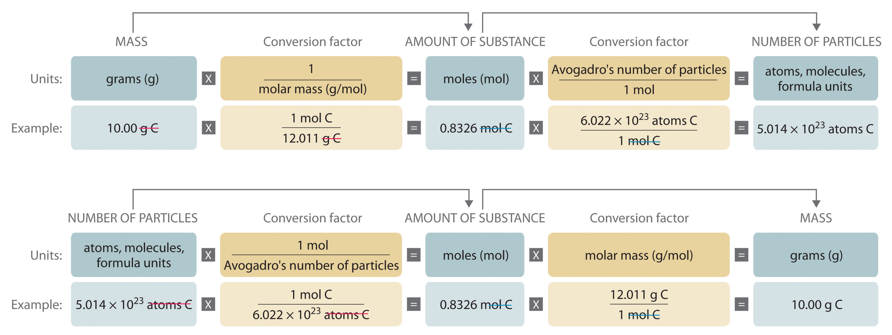
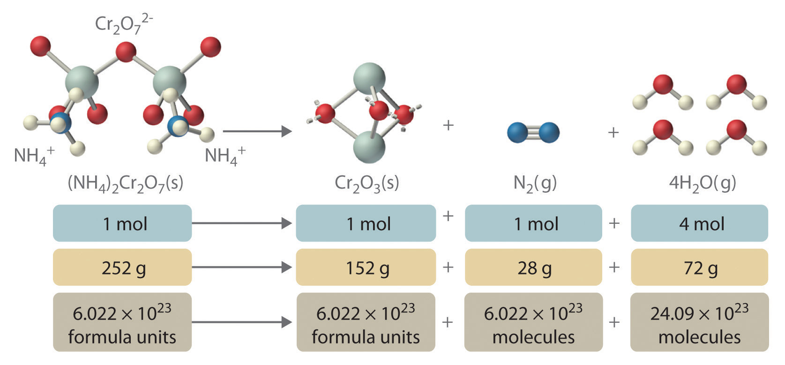
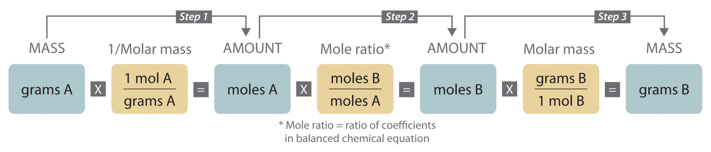
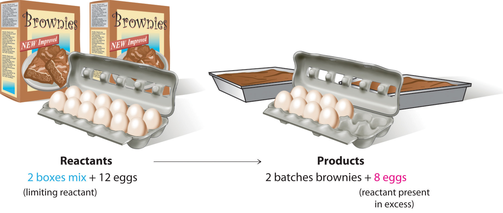
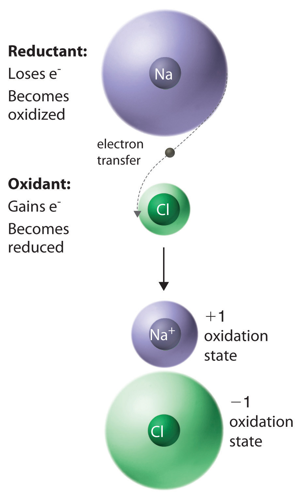
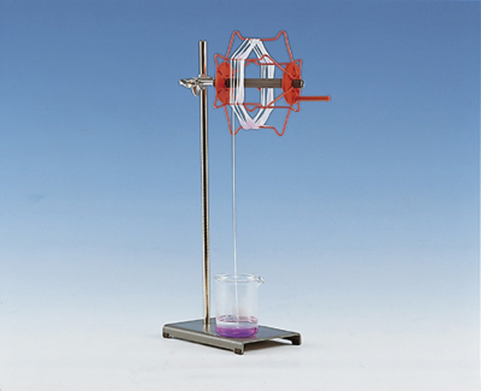

Chapter 2 "Molecules, Ions, and Chemical Formulas" introduced you to a wide variety of chemical compounds, many of which have interesting applications. For example, nitrous oxide, a mild anesthetic, is also used as the propellant in cans of whipped cream, while copper(I) oxide is used as both a red glaze for ceramics and in antifouling bottom paints for boats. In addition to the physical properties of substances, chemists are also interested in their chemical reactionsA process in which a substance is converted to one or more other substances with different compositions and properties., processes in which a substance is converted to one or more other substances with different compositions and properties. Our very existence depends on chemical reactions, such as those between oxygen in the air we breathe and nutrient molecules in the foods we eat. Other reactions cook those foods, heat our homes, and provide the energy to run our cars. Many of the materials and pharmaceuticals that we take for granted today, such as silicon nitride for the sharp edge of cutting tools and antibiotics such as amoxicillin, were unknown only a few years ago. Their development required that chemists understand how substances combine in certain ratios and under specific conditions to produce a new substance with particular properties.

Sodium. The fourth most abundant alkali metal on Earth, sodium is a highly reactive element that is never found free in nature. When heated to 250°C, it bursts into flames if exposed to air.
We begin this chapter by describing the relationship between the mass of a sample of a substance and its composition. We then develop methods for determining the quantities of compounds produced or consumed in chemical reactions, and we describe some fundamental types of chemical reactions. By applying the concepts and skills introduced in this chapter, you will be able to explain what happens to the sugar in a candy bar you eat, what reaction occurs in a battery when you start your car, what may be causing the “ozone hole” over Antarctica, and how we might prevent the hole’s growth.
As you learned in Chapter 1 "Introduction to Chemistry", the mass number is the sum of the numbers of protons and neutrons present in the nucleus of an atom. The mass number is an integer that is approximately equal to the numerical value of the atomic mass. Although the mass number is unitless, it is assigned units called atomic mass units (amu). Because a molecule or a polyatomic ion is an assembly of atoms whose identities are given in its molecular or ionic formula, we can calculate the average atomic mass of any molecule or polyatomic ion from its composition by adding together the masses of the constituent atoms. The average mass of a monatomic ion is the same as the average mass of an atom of the element because the mass of electrons is so small that it is insignificant in most calculations.
The molecular massThe sum of the average masses of the atoms in one molecule of a substance, each multiplied by its subscript. of a substance is the sum of the average masses of the atoms in one molecule of a substance. It is calculated by adding together the atomic masses of the elements in the substance, each multiplied by its subscript (written or implied) in the molecular formula. Because the units of atomic mass are atomic mass units, the units of molecular mass are also atomic mass units. The procedure for calculating molecular masses is illustrated in Example 1.
Calculate the molecular mass of ethanol, whose condensed structural formula is CH3CH2OH. Among its many uses, ethanol is a fuel for internal combustion engines.
Given: molecule
Asked for: molecular mass
Strategy:
A Determine the number of atoms of each element in the molecule.
B Obtain the atomic masses of each element from the periodic table and multiply the atomic mass of each element by the number of atoms of that element.
C Add together the masses to give the molecular mass.
Solution:
A The molecular formula of ethanol may be written in three different ways: CH3CH2OH (which illustrates the presence of an ethyl group, CH3CH2−, and an −OH group), C2H5OH, and C2H6O; all show that ethanol has two carbon atoms, six hydrogen atoms, and one oxygen atom.
B Taking the atomic masses from the periodic table, we obtain
C Adding together the masses gives the molecular mass:
24.022 amu + 6.0474 amu + 15.9994 amu = 46.069 amuAlternatively, we could have used unit conversions to reach the result in one step, as described in Essential Skills 2 (Section 3.7 "Essential Skills 2"):
The same calculation can also be done in a tabular format, which is especially helpful for more complex molecules:
Exercise
Calculate the molecular mass of trichlorofluoromethane, also known as Freon-11, whose condensed structural formula is CCl3F. Until recently, it was used as a refrigerant. The structure of a molecule of Freon-11 is as follows:
Answer: 137.368 amu
Unlike molecules, which have covalent bonds, ionic compounds do not have a readily identifiable molecular unit. So for ionic compounds we use the formula mass (also called the empirical formula massAnother name for formula mass.) of the compound rather than the molecular mass. The formula massThe sum of the atomic masses of all the elements in the empirical formula, each multiplied by its subscript. is the sum of the atomic masses of all the elements in the empirical formula, each multiplied by its subscript (written or implied). It is directly analogous to the molecular mass of a covalent compound. Once again, the units are atomic mass units.
Atomic mass, molecular mass, and formula mass all have the same units: atomic mass units.
Calculate the formula mass of Ca3(PO4)2, commonly called calcium phosphate. This compound is the principal source of calcium found in bovine milk.
Given: ionic compound
Asked for: formula mass
Strategy:
A Determine the number of atoms of each element in the empirical formula.
B Obtain the atomic masses of each element from the periodic table and multiply the atomic mass of each element by the number of atoms of that element.
C Add together the masses to give the formula mass.
Solution:
A The empirical formula—Ca3(PO4)2—indicates that the simplest electrically neutral unit of calcium phosphate contains three Ca2+ ions and two PO43− ions. The formula mass of this molecular unit is calculated by adding together the atomic masses of three calcium atoms, two phosphorus atoms, and eight oxygen atoms.
B Taking atomic masses from the periodic table, we obtain
C Adding together the masses gives the formula mass of Ca3(PO4)2:
120.234 amu + 61.947522 amu + 127.9952 amu = 310.177 amuWe could also find the formula mass of Ca3(PO4)2 in one step by using unit conversions or a tabular format:
Exercise
Calculate the formula mass of Si3N4, commonly called silicon nitride. It is an extremely hard and inert material that is used to make cutting tools for machining hard metal alloys.
Answer: 140.29 amu
In Chapter 1 "Introduction to Chemistry", we described Dalton’s theory that each chemical compound has a particular combination of atoms and that the ratios of the numbers of atoms of the elements present are usually small whole numbers. We also described the law of multiple proportions, which states that the ratios of the masses of elements that form a series of compounds are small whole numbers. The problem for Dalton and other early chemists was to discover the quantitative relationship between the number of atoms in a chemical substance and its mass. Because the masses of individual atoms are so minuscule (on the order of 10−23 g/atom), chemists do not measure the mass of individual atoms or molecules. In the laboratory, for example, the masses of compounds and elements used by chemists typically range from milligrams to grams, while in industry, chemicals are bought and sold in kilograms and tons. To analyze the transformations that occur between individual atoms or molecules in a chemical reactionA process in which a substance is converted to one or more other substances with different compositions and properties., it is therefore absolutely essential for chemists to know how many atoms or molecules are contained in a measurable quantity in the laboratory—a given mass of sample. The unit that provides this link is the mole (mol)The quantity of a substance that contains the same number of units (e.g., atoms or molecules) as the number of carbon atoms in exactly 12 g of isotopically pure carbon-12., from the Latin moles, meaning “pile” or “heap” (not from the small subterranean animal!).
Many familiar items are sold in numerical quantities that have unusual names. For example, cans of soda come in a six-pack, eggs are sold by the dozen (12), and pencils often come in a gross (12 dozen, or 144). Sheets of printer paper are packaged in reams of 500, a seemingly large number. Atoms are so small, however, that even 500 atoms are too small to see or measure by most common techniques. Any readily measurable mass of an element or compound contains an extraordinarily large number of atoms, molecules, or ions, so an extraordinarily large numerical unit is needed to count them. The mole is used for this purpose.
A mole is defined as the amount of a substance that contains the number of carbon atoms in exactly 12 g of isotopically pure carbon-12. According to the most recent experimental measurements, this mass of carbon-12 contains 6.022142 × 1023 atoms, but for most purposes 6.022 × 1023 provides an adequate number of significant figures. Just as 1 mol of atoms contains 6.022 × 1023 atoms, 1 mol of eggs contains 6.022 × 1023 eggs. The number in a mole is called Avogadro’s numberThe number of units (e.g., atoms, molecules, or formula units) in 1 mol: ., after the 19th-century Italian scientist who first proposed a relationship between the volumes of gases and the numbers of particles they contain.
It is not obvious why eggs come in dozens rather than 10s or 14s, or why a ream of paper contains 500 sheets rather than 400 or 600. The definition of a mole—that is, the decision to base it on 12 g of carbon-12—is also arbitrary. The important point is that 1 mol of carbon—or of anything else, whether atoms, compact discs, or houses—always has the same number of objects: 6.022 × 1023.
One mole always has the same number of objects: 6.022 × 1023.
To appreciate the magnitude of Avogadro’s number, consider a mole of pennies. Stacked vertically, a mole of pennies would be 4.5 × 1017 mi high, or almost six times the diameter of the Milky Way galaxy. If a mole of pennies were distributed equally among the entire population on Earth, each person would get more than one trillion dollars. Clearly, the mole is so large that it is useful only for measuring very small objects, such as atoms.
The concept of the mole allows us to count a specific number of individual atoms and molecules by weighing measurable quantities of elements and compounds. To obtain 1 mol of carbon-12 atoms, we would weigh out 12 g of isotopically pure carbon-12. Because each element has a different atomic mass, however, a mole of each element has a different mass, even though it contains the same number of atoms (6.022 × 1023). This is analogous to the fact that a dozen extra large eggs weighs more than a dozen small eggs, or that the total weight of 50 adult humans is greater than the total weight of 50 children. Because of the way in which the mole is defined, for every element the number of grams in a mole is the same as the number of atomic mass units in the atomic mass of the element. For example, the mass of 1 mol of magnesium (atomic mass = 24.305 amu) is 24.305 g. Because the atomic mass of magnesium (24.305 amu) is slightly more than twice that of a carbon-12 atom (12 amu), the mass of 1 mol of magnesium atoms (24.305 g) is slightly more than twice that of 1 mol of carbon-12 (12 g). Similarly, the mass of 1 mol of helium (atomic mass = 4.002602 amu) is 4.002602 g, which is about one-third that of 1 mol of carbon-12. Using the concept of the mole, we can now restate Dalton’s theory: 1 mol of a compound is formed by combining elements in amounts whose mole ratios are small whole numbers. For example, 1 mol of water (H2O) has 2 mol of hydrogen atoms and 1 mol of oxygen atoms.
The molar massThe mass in grams of 1 mol of a substance. of a substance is defined as the mass in grams of 1 mol of that substance. One mole of isotopically pure carbon-12 has a mass of 12 g. For an element, the molar mass is the mass of 1 mol of atoms of that element; for a covalent molecular compound, it is the mass of 1 mol of molecules of that compound; for an ionic compound, it is the mass of 1 mol of formula units. That is, the molar mass of a substance is the mass (in grams per mole) of 6.022 × 1023 atoms, molecules, or formula units of that substance. In each case, the number of grams in 1 mol is the same as the number of atomic mass units that describe the atomic mass, the molecular mass, or the formula mass, respectively.
The molar mass of any substance is its atomic mass, molecular mass, or formula mass in grams per mole.
The periodic table lists the atomic mass of carbon as 12.011 amu; the average molar mass of carbon—the mass of 6.022 × 1023 carbon atoms—is therefore 12.011 g/mol:
| Substance (formula) | Atomic, Molecular, or Formula Mass (amu) | Molar Mass (g/mol) |
|---|---|---|
| carbon (C) | 12.011 (atomic mass) | 12.011 |
| ethanol (C2H5OH) | 46.069 (molecular mass) | 46.069 |
| calcium phosphate [Ca3(PO4)2] | 310.177 (formula mass) | 310.177 |
The molar mass of naturally occurring carbon is different from that of carbon-12 and is not an integer because carbon occurs as a mixture of carbon-12, carbon-13, and carbon-14. One mole of carbon still has 6.022 × 1023 carbon atoms, but 98.89% of those atoms are carbon-12, 1.11% are carbon-13, and a trace (about 1 atom in 1012) are carbon-14. (For more information, see Section 1.6 "Isotopes and Atomic Masses".) Similarly, the molar mass of uranium is 238.03 g/mol, and the molar mass of iodine is 126.90 g/mol. When we deal with elements such as iodine and sulfur, which occur as a diatomic molecule (I2) and a polyatomic molecule (S8), respectively, molar mass usually refers to the mass of 1 mol of atoms of the element—in this case I and S, not to the mass of 1 mol of molecules of the element (I2 and S8).
The molar mass of ethanol is the mass of ethanol (C2H5OH) that contains 6.022 × 1023 ethanol molecules. As you calculated in Example 1, the molecular mass of ethanol is 46.069 amu. Because 1 mol of ethanol contains 2 mol of carbon atoms (2 × 12.011 g), 6 mol of hydrogen atoms (6 × 1.0079 g), and 1 mol of oxygen atoms (1 × 15.9994 g), its molar mass is 46.069 g/mol. Similarly, the formula mass of calcium phosphate [Ca3(PO4)2] is 310.177 amu, so its molar mass is 310.177 g/mol. This is the mass of calcium phosphate that contains 6.022 × 1023 formula units. Figure 3.1 "Samples of 1 Mol of Some Common Substances" shows samples that contain precisely one molar mass of several common substances.
Figure 3.1 Samples of 1 Mol of Some Common Substances

The mole is the basis of quantitative chemistry. It provides chemists with a way to convert easily between the mass of a substance and the number of individual atoms, molecules, or formula units of that substance. Conversely, it enables chemists to calculate the mass of a substance needed to obtain a desired number of atoms, molecules, or formula units. For example, to convert moles of a substance to mass, we use the relationship
Equation 3.1
(moles)(molar mass) → massor, more specifically,
Conversely, to convert the mass of a substance to moles, we use
Equation 3.2
Be sure to pay attention to the units when converting between mass and moles.
Figure 3.2 "A Flowchart for Converting between Mass; the Number of Moles; and the Number of Atoms, Molecules, or Formula Units" is a flowchart for converting between mass; the number of moles; and the number of atoms, molecules, or formula units. The use of these conversions is illustrated in Example 3 and Example 4.
Figure 3.2 A Flowchart for Converting between Mass; the Number of Moles; and the Number of Atoms, Molecules, or Formula Units
For 35.00 g of ethylene glycol (HOCH2CH2OH), which is used in inks for ballpoint pens, calculate the number of
Given: mass and molecular formula
Asked for: number of moles and number of molecules
Strategy:
A Use the molecular formula of the compound to calculate its molecular mass in grams per mole.
B Convert from mass to moles by dividing the mass given by the compound’s molar mass.
C Convert from moles to molecules by multiplying the number of moles by Avogadro’s number.
Solution:
A The molecular mass of ethylene glycol can be calculated from its molecular formula using the method illustrated in Example 1:
The molar mass of ethylene glycol is 62.068 g/mol.
B The number of moles of ethylene glycol present in 35.00 g can be calculated by dividing the mass (in grams) by the molar mass (in grams per mole):
So
It is always a good idea to estimate the answer before you do the actual calculation. In this case, the mass given (35.00 g) is less than the molar mass, so the answer should be less than 1 mol. The calculated answer (0.5639 mol) is indeed less than 1 mol, so we have probably not made a major error in the calculations.
C To calculate the number of molecules in the sample, we multiply the number of moles by Avogadro’s number:
Because we are dealing with slightly more than 0.5 mol of ethylene glycol, we expect the number of molecules present to be slightly more than one-half of Avogadro’s number, or slightly more than 3 × 1023 molecules, which is indeed the case.
Exercise
For 75.0 g of CCl3F (Freon-11), calculate the number of
Answer:
Calculate the mass of 1.75 mol of each compound.
Given: number of moles and molecular or empirical formula
Asked for: mass
Strategy:
A Calculate the molecular mass of the compound in grams from its molecular formula (if covalent) or empirical formula (if ionic).
B Convert from moles to mass by multiplying the moles of the compound given by its molar mass.
Solution:
We begin by calculating the molecular mass of S2Cl2 and the formula mass of Ca(ClO)2.
A The molar mass of S2Cl2 is obtained from its molecular mass as follows:
The molar mass of S2Cl2 is 135.036 g/mol.
B The mass of 1.75 mol of S2Cl2 is calculated as follows:
A The formula mass of Ca(ClO)2 is obtained as follows:
The molar mass of Ca(ClO)2 142.983 g/mol.
B The mass of 1.75 mol of Ca(ClO)2 is calculated as follows:
Because 1.75 mol is less than 2 mol, the final quantity in grams in both cases should be less than twice the molar mass, which it is.
Exercise
Calculate the mass of 0.0122 mol of each compound.
Answer:
The molecular mass and the formula mass of a compound are obtained by adding together the atomic masses of the atoms present in the molecular formula or empirical formula, respectively; the units of both are atomic mass units (amu). The mole is a unit used to measure the number of atoms, molecules, or (in the case of ionic compounds) formula units in a given mass of a substance. The mole is defined as the amount of substance that contains the number of carbon atoms in exactly 12 g of carbon-12 and consists of Avogadro’s number (6.022 × 1023) of atoms of carbon-12. The molar mass of a substance is defined as the mass of 1 mol of that substance, expressed in grams per mole, and is equal to the mass of 6.022 × 1023 atoms, molecules, or formula units of that substance.
Please be sure you are familiar with the topics discussed in Essential Skills 2 (Section 3.7 "Essential Skills 2") before proceeding to the Conceptual Problems.
Describe the relationship between an atomic mass unit and a gram.
Is it correct to say that ethanol has a formula mass of 46? Why or why not?
If 2 mol of sodium react completely with 1 mol of chlorine to produce sodium chloride, does this mean that 2 g of sodium reacts completely with 1 g of chlorine to give the same product? Explain your answer.
Construct a flowchart to show how you would calculate the number of moles of silicon in a 37.0 g sample of orthoclase (KAlSi3O8), a mineral used in the manufacture of porcelain.
Construct a flowchart to show how you would calculate the number of moles of nitrogen in a 22.4 g sample of nitroglycerin that contains 18.5% nitrogen by mass.
A = %N by mass, expressed as a decimal
Please be sure you are familiar with the topics discussed in Essential Skills 2 (Section 3.7 "Essential Skills 2") before proceeding to the Numerical Problems.
Derive an expression that relates the number of molecules in a sample of a substance to its mass and molecular mass.
Calculate the molecular mass or formula mass of each compound.
Calculate the molecular mass or formula mass of each compound.
Calculate the molar mass of each compound.
Calculate the molar mass of each compound.
For each compound, write the condensed formula, name the compound, and give its molar mass.
For each compound, write the condensed formula, name the compound, and give its molar mass.
Calculate the number of moles in 5.00 × 102 g of each substance. How many molecules or formula units are present in each sample?
Calculate the mass in grams of each sample.
Give the number of molecules or formula units in each sample.
Give the number of moles in each sample.
Solutions of iodine are used as antiseptics and disinfectants. How many iodine atoms correspond to 11.0 g of molecular iodine (I2)?
What is the total number of atoms in each sample?
What is the total number of atoms in each sample?
What is the total number of atoms in each sample?
Decide whether each statement is true or false and explain your reasoning.
Complete the following table.
| Substance | Mass (g) | Number of Moles | Number of Molecules or Formula Units | Number of Atoms or Ions |
|---|---|---|---|---|
| MgCl2 | 37.62 | |||
| AgNO3 | 2.84 | |||
| BH4Cl | 8.93 × 1025 | |||
| K2S | 7.69 × 1026 | |||
| H2SO4 | 1.29 | |||
| C6H14 | 11.84 | |||
| HClO3 | 2.45 × 1026 |
Give the formula mass or the molecular mass of each substance.
Give the formula mass or the molecular mass of each substance.
When a new chemical compound, such as a potential new pharmaceutical, is synthesized in the laboratory or isolated from a natural source, chemists determine its elemental composition, its empirical formula, and its structure to understand its properties. In this section, we focus on how to determine the empirical formula of a compound and then use it to determine the molecular formula if the molar mass of the compound is known.
The law of definite proportions states that a chemical compound always contains the same proportion of elements by mass; that is, the percent compositionThe percentage of each element present in a pure substance. With few exceptions, the percent composition of a chemical compound is constant (see law of definite proportions).—the percentage of each element present in a pure substance—is constant (although we now know there are exceptions to this law). For example, sucrose (cane sugar) is 42.11% carbon, 6.48% hydrogen, and 51.41% oxygen by mass. This means that 100.00 g of sucrose always contains 42.11 g of carbon, 6.48 g of hydrogen, and 51.41 g of oxygen. First we will use the molecular formula of sucrose (C12H22O11) to calculate the mass percentage of the component elements; then we will show how mass percentages can be used to determine an empirical formula.
According to its molecular formula, each molecule of sucrose contains 12 carbon atoms, 22 hydrogen atoms, and 11 oxygen atoms. A mole of sucrose molecules therefore contains 12 mol of carbon atoms, 22 mol of hydrogen atoms, and 11 mol of oxygen atoms. We can use this information to calculate the mass of each element in 1 mol of sucrose, which will give us the molar mass of sucrose. We can then use these masses to calculate the percent composition of sucrose. To three decimal places, the calculations are the following:
Equation 3.3
Thus 1 mol of sucrose has a mass of 342.297 g; note that more than half of the mass (175.989 g) is oxygen, and almost half of the mass (144.132 g) is carbon.
The mass percentage of each element in sucrose is the mass of the element present in 1 mol of sucrose divided by the molar mass of sucrose, multiplied by 100 to give a percentage. The result is shown to two decimal places:
You can check your work by verifying that the sum of the percentages of all the elements in the compound is 100%:
42.12% + 6.48% + 51.41% = 100.01%If the sum is not 100%, you have made an error in your calculations. (Rounding to the correct number of decimal places can, however, cause the total to be slightly different from 100%.) Thus 100.00 g of sucrose contains 42.12 g of carbon, 6.48 g of hydrogen, and 51.41 g of oxygen; to two decimal places, the percent composition of sucrose is indeed 42.12% carbon, 6.48% hydrogen, and 51.41% oxygen.

We could also calculate the mass percentages using atomic masses and molecular masses, with atomic mass units. Because the answer we are seeking is a ratio, expressed as a percentage, the units of mass cancel whether they are grams (using molar masses) or atomic mass units (using atomic and molecular masses).
Aspartame is the artificial sweetener sold as NutraSweet and Equal. Its molecular formula is C14H18N2O5.

Given: molecular formula and mass of sample
Asked for: mass percentage of all elements and mass of one element in sample
Strategy:
A Use atomic masses from the periodic table to calculate the molar mass of aspartame.
B Divide the mass of each element by the molar mass of aspartame; then multiply by 100 to obtain percentages.
C To find the mass of an element contained in a given mass of aspartame, multiply the mass of aspartame by the mass percentage of that element, expressed as a decimal.
Solution:
A We calculate the mass of each element in 1 mol of aspartame and the molar mass of aspartame, here to three decimal places:
Thus more than half the mass of 1 mol of aspartame (294.277 g) is carbon (168.154 g).
B To calculate the mass percentage of each element, we divide the mass of each element in the compound by the molar mass of aspartame and then multiply by 100 to obtain percentages, here reported to two decimal places:
As a check, we can add the percentages together:
57.14% + 6.16% + 9.52% + 27.18% = 100.00%If you obtain a total that differs from 100% by more than about ±1%, there must be an error somewhere in the calculation.
C The mass of carbon in 1.00 g of aspartame is calculated as follows:
Exercise
Calculate the mass percentage of each element in aluminum oxide (Al2O3). Then calculate the mass of aluminum in a 3.62 g sample of pure aluminum oxide.
Answer: 52.93% aluminum; 47.08% oxygen; 1.92 g Al
Just as we can use the empirical formula of a substance to determine its percent composition, we can use the percent composition of a sample to determine its empirical formula, which can then be used to determine its molecular formula. Such a procedure was actually used to determine the empirical and molecular formulas of the first antibiotic to be discovered: penicillin.
Antibiotics are chemical compounds that selectively kill microorganisms, many of which cause diseases. Although we may take antibiotics for granted today, penicillin was discovered only about 80 years ago. The subsequent development of a wide array of other antibiotics for treating many common diseases has contributed greatly to the substantial increase in life expectancy over the past 50 years. The discovery of penicillin is a historical detective story in which the use of mass percentages to determine empirical formulas played a key role.
In 1928, Alexander Fleming, a young microbiologist at the University of London, was working with a common bacterium that causes boils and other infections such as blood poisoning. For laboratory study, bacteria are commonly grown on the surface of a nutrient-containing gel in small, flat culture dishes. One day Fleming noticed that one of his cultures was contaminated by a bluish-green mold similar to the mold found on spoiled bread or fruit. Such accidents are rather common, and most laboratory workers would have simply thrown the cultures away. Fleming noticed, however, that the bacteria were growing everywhere on the gel except near the contaminating mold (part (a) in Figure 3.3 " "), and he hypothesized that the mold must be producing a substance that either killed the bacteria or prevented their growth. To test this hypothesis, he grew the mold in a liquid and then filtered the liquid and added it to various bacteria cultures. The liquid killed not only the bacteria Fleming had originally been studying but also a wide range of other disease-causing bacteria. Because the mold was a member of the Penicillium family (named for their pencil-shaped branches under the microscope) (part (b) in Figure 3.3 " "), Fleming called the active ingredient in the broth penicillin.
Figure 3.3 Penicillium

(a) Penicillium mold is growing in a culture dish; the photo shows its effect on bacterial growth. (b) In this photomicrograph of Penicillium, its rod- and pencil-shaped branches are visible. The name comes from the Latin penicillus, meaning “paintbrush.”
Although Fleming was unable to isolate penicillin in pure form, the medical importance of his discovery stimulated researchers in other laboratories. Finally, in 1940, two chemists at Oxford University, Howard Florey (1898–1968) and Ernst Chain (1906–1979), were able to isolate an active product, which they called penicillin G. Within three years, penicillin G was in widespread use for treating pneumonia, gangrene, gonorrhea, and other diseases, and its use greatly increased the survival rate of wounded soldiers in World War II. As a result of their work, Fleming, Florey, and Chain shared the Nobel Prize in Medicine in 1945.
As soon as they had succeeded in isolating pure penicillin G, Florey and Chain subjected the compound to a procedure called combustion analysis (described later in this section) to determine what elements were present and in what quantities. The results of such analyses are usually reported as mass percentages. They discovered that a typical sample of penicillin G contains 53.9% carbon, 4.8% hydrogen, 7.9% nitrogen, 9.0% sulfur, and 6.5% sodium by mass. The sum of these numbers is only 82.1%, rather than 100.0%, which implies that there must be one or more additional elements. A reasonable candidate is oxygen, which is a common component of compounds that contain carbon and hydrogen;Do not assume that the “missing” mass is always due to oxygen. It could be any other element. for technical reasons, however, it is difficult to analyze for oxygen directly. If we assume that all the missing mass is due to oxygen, then penicillin G contains (100.0% − 82.1%) = 17.9% oxygen. From these mass percentages, the empirical formula and eventually the molecular formula of the compound can be determined.
To determine the empirical formula from the mass percentages of the elements in a compound such as penicillin G, we need to convert the mass percentages to relative numbers of atoms. For convenience, we assume that we are dealing with a 100.0 g sample of the compound, even though the sizes of samples used for analyses are generally much smaller, usually in milligrams. This assumption simplifies the arithmetic because a 53.9% mass percentage of carbon corresponds to 53.9 g of carbon in a 100.0 g sample of penicillin G; likewise, 4.8% hydrogen corresponds to 4.8 g of hydrogen in 100.0 g of penicillin G; and so forth for the other elements. We can then divide each mass by the molar mass of the element to determine how many moles of each element are present in the 100.0 g sample:
Equation 3.4
Thus 100.0 g of penicillin G contains 4.49 mol of carbon, 4.8 mol of hydrogen, 0.56 mol of nitrogen, 0.28 mol of sulfur, 0.28 mol of sodium, and 1.12 mol of oxygen (assuming that all the missing mass was oxygen). The number of significant figures in the numbers of moles of elements varies between two and three because some of the analytical data were reported to only two significant figures.
These results tell us the ratios of the moles of the various elements in the sample (4.49 mol of carbon to 4.8 mol of hydrogen to 0.56 mol of nitrogen, and so forth), but they are not the whole-number ratios we need for the empirical formula—the empirical formula expresses the relative numbers of atoms in the smallest whole numbers possible. To obtain whole numbers, we divide the numbers of moles of all the elements in the sample by the number of moles of the element present in the lowest relative amount, which in this example is sulfur or sodium. The results will be the subscripts of the elements in the empirical formula. To two significant figures, the results are
Equation 3.5
The empirical formula of penicillin G is therefore C16H17N2NaO4S. Other experiments have shown that penicillin G is actually an ionic compound that contains Na+ cations and [C16H17N2O4S]− anions in a 1:1 ratio. The complex structure of penicillin G (Figure 3.4 "Structural Formula and Ball-and-Stick Model of the Anion of Penicillin G") was not determined until 1948.
Figure 3.4 Structural Formula and Ball-and-Stick Model of the Anion of Penicillin G

In some cases, one or more of the subscripts in a formula calculated using this procedure may not be integers. Does this mean that the compound of interest contains a nonintegral number of atoms? No; rounding errors in the calculations as well as experimental errors in the data can result in nonintegral ratios. When this happens, you must exercise some judgment in interpreting the results, as illustrated in Example 6. In particular, ratios of 1.50, 1.33, or 1.25 suggest that you should multiply all subscripts in the formula by 2, 3, or 4, respectively. Only if the ratio is within 5% of an integral value should you consider rounding to the nearest integer.
Calculate the empirical formula of the ionic compound calcium phosphate, a major component of fertilizer and a polishing agent in toothpastes. Elemental analysis indicates that it contains 38.77% calcium, 19.97% phosphorus, and 41.27% oxygen.
Given: percent composition
Asked for: empirical formula
Strategy:
A Assume a 100 g sample and calculate the number of moles of each element in that sample.
B Obtain the relative numbers of atoms of each element in the compound by dividing the number of moles of each element in the 100 g sample by the number of moles of the element present in the smallest amount.
C If the ratios are not integers, multiply all subscripts by the same number to give integral values.
D Because this is an ionic compound, identify the anion and cation and write the formula so that the charges balance.
Solution:
A A 100 g sample of calcium phosphate contains 38.77 g of calcium, 19.97 g of phosphorus, and 41.27 g of oxygen. Dividing the mass of each element in the 100 g sample by its molar mass gives the number of moles of each element in the sample:
B To obtain the relative numbers of atoms of each element in the compound, divide the number of moles of each element in the 100-g sample by the number of moles of the element in the smallest amount, in this case phosphorus:
C We could write the empirical formula of calcium phosphate as Ca1.501P1.000O4.002, but the empirical formula should show the ratios of the elements as small whole numbers. To convert the result to integral form, multiply all the subscripts by 2 to get Ca3.002P2.000O8.004. The deviation from integral atomic ratios is small and can be attributed to minor experimental errors; therefore, the empirical formula is Ca3P2O8.
D The calcium ion (Ca2+) is a cation, so to maintain electrical neutrality, phosphorus and oxygen must form a polyatomic anion. We know from Chapter 2 "Molecules, Ions, and Chemical Formulas" that phosphorus and oxygen form the phosphate ion (PO43−; see Table 2.4 "Common Polyatomic Ions and Their Names"). Because there are two phosphorus atoms in the empirical formula, two phosphate ions must be present. So we write the formula of calcium phosphate as Ca3(PO4)2.
Exercise
Calculate the empirical formula of ammonium nitrate, an ionic compound that contains 35.00% nitrogen, 5.04% hydrogen, and 59.96% oxygen by mass; refer to Table 2.4 "Common Polyatomic Ions and Their Names" if necessary. Although ammonium nitrate is widely used as a fertilizer, it can be dangerously explosive. For example, it was a major component of the explosive used in the 1995 Oklahoma City bombing.
Answer: N2H4O3 is NH4+NO3−, written as NH4NO3
One of the most common ways to determine the elemental composition of an unknown hydrocarbon is an analytical procedure called combustion analysis. A small, carefully weighed sample of an unknown compound that may contain carbon, hydrogen, nitrogen, and/or sulfur is burned in an oxygen atmosphere,Other elements, such as metals, can be determined by other methods. and the quantities of the resulting gaseous products (CO2, H2O, N2, and SO2, respectively) are determined by one of several possible methods. One procedure used in combustion analysis is outlined schematically in Figure 3.5 "Steps for Obtaining an Empirical Formula from Combustion Analysis", and a typical combustion analysis is illustrated in Example 7.
Figure 3.5 Steps for Obtaining an Empirical Formula from Combustion Analysis

Naphthalene, the active ingredient in one variety of mothballs, is an organic compound that contains carbon and hydrogen only. Complete combustion of a 20.10 mg sample of naphthalene in oxygen yielded 69.00 mg of CO2 and 11.30 mg of H2O. Determine the empirical formula of naphthalene.
Given: mass of sample and mass of combustion products
Asked for: empirical formula
Strategy:
A Use the masses and molar masses of the combustion products, CO2 and H2O, to calculate the masses of carbon and hydrogen present in the original sample of naphthalene.
B Use those masses and the molar masses of the elements to calculate the empirical formula of naphthalene.
Solution:
A Upon combustion, 1 mol of CO2 is produced for each mole of carbon atoms in the original sample. Similarly, 1 mol of H2O is produced for every 2 mol of hydrogen atoms present in the sample. The masses of carbon and hydrogen in the original sample can be calculated from these ratios, the masses of CO2 and H2O, and their molar masses. Because the units of molar mass are grams per mole, we must first convert the masses from milligrams to grams:
B To obtain the relative numbers of atoms of both elements present, we need to calculate the number of moles of each and divide by the number of moles of the element present in the smallest amount:
Dividing each number by the number of moles of the element present in the smaller amount gives
Thus naphthalene contains a 1.25:1 ratio of moles of carbon to moles of hydrogen: C1.25H1.0. Because the ratios of the elements in the empirical formula must be expressed as small whole numbers, multiply both subscripts by 4, which gives C5H4 as the empirical formula of naphthalene. In fact, the molecular formula of naphthalene is C10H8, which is consistent with our results.
Exercise
Answer:
The empirical formula gives only the relative numbers of atoms in a substance in the smallest possible ratio. For a covalent substance, we are usually more interested in the molecular formula, which gives the actual number of atoms of each kind present per molecule. Without additional information, however, it is impossible to know whether the formula of penicillin G, for example, is C16H17N2NaO4S or an integral multiple, such as C32H34N4Na2O8S2, C48H51N6Na3O12S3, or (C16H17N2NaO4S)n, where n is an integer. (The actual structure of penicillin G is shown in Figure 3.4 "Structural Formula and Ball-and-Stick Model of the Anion of Penicillin G".)
Consider glucose, the sugar that circulates in our blood to provide fuel for our bodies and especially for our brains. Results from combustion analysis of glucose report that glucose contains 39.68% carbon and 6.58% hydrogen. Because combustion occurs in the presence of oxygen, it is impossible to directly determine the percentage of oxygen in a compound by using combustion analysis; other more complex methods are necessary. If we assume that the remaining percentage is due to oxygen, then glucose would contain 53.79% oxygen. A 100.0 g sample of glucose would therefore contain 39.68 g of carbon, 6.58 g of hydrogen, and 53.79 g of oxygen. To calculate the number of moles of each element in the 100.0 g sample, we divide the mass of each element by its molar mass:
Equation 3.6
Once again, we find the subscripts of the elements in the empirical formula by dividing the number of moles of each element by the number of moles of the element present in the smallest amount:
The oxygen:carbon ratio is 1.018, or approximately 1, and the hydrogen:carbon ratio is approximately 2. The empirical formula of glucose is therefore CH2O, but what is its molecular formula?
Many known compounds have the empirical formula CH2O, including formaldehyde, which is used to preserve biological specimens and has properties that are very different from the sugar circulating in our blood. At this point, we cannot know whether glucose is CH2O, C2H4O2, or any other (CH2O)n. We can, however, use the experimentally determined molar mass of glucose (180 g/mol) to resolve this dilemma.
First, we calculate the formula mass, the molar mass of the formula unit, which is the sum of the atomic masses of the elements in the empirical formula multiplied by their respective subscripts. For glucose,
Equation 3.7
This is much smaller than the observed molar mass of 180 g/mol.
Second, we determine the number of formula units per mole. For glucose, we can calculate the number of (CH2O) units—that is, the n in (CH2O)n—by dividing the molar mass of glucose by the formula mass of CH2O:
Equation 3.8
Each glucose contains six CH2O formula units, which gives a molecular formula for glucose of (CH2O)6, which is more commonly written as C6H12O6. The molecular structures of formaldehyde and glucose, both of which have the empirical formula CH2O, are shown in Figure 3.6 "Structural Formulas and Ball-and-Stick Models of (a) Formaldehyde and (b) Glucose".
Figure 3.6 Structural Formulas and Ball-and-Stick Models of (a) Formaldehyde and (b) Glucose

Calculate the molecular formula of caffeine, a compound found in coffee, tea, and cola drinks that has a marked stimulatory effect on mammals. The chemical analysis of caffeine shows that it contains 49.18% carbon, 5.39% hydrogen, 28.65% nitrogen, and 16.68% oxygen by mass, and its experimentally determined molar mass is 196 g/mol.
Given: percent composition and molar mass
Asked for: molecular formula
Strategy:
A Assume 100 g of caffeine. From the percentages given, use the procedure given in Example 6 to calculate the empirical formula of caffeine.
B Calculate the formula mass and then divide the experimentally determined molar mass by the formula mass. This gives the number of formula units present.
C Multiply each subscript in the empirical formula by the number of formula units to give the molecular formula.
Solution:
A We begin by dividing the mass of each element in 100.0 g of caffeine (49.18 g of carbon, 5.39 g of hydrogen, 28.65 g of nitrogen, 16.68 g of oxygen) by its molar mass. This gives the number of moles of each element in 100 g of caffeine.
To obtain the relative numbers of atoms of each element present, divide the number of moles of each element by the number of moles of the element present in the least amount:
These results are fairly typical of actual experimental data. None of the atomic ratios is exactly integral but all are within 5% of integral values. Just as in Example 6, it is reasonable to assume that such small deviations from integral values are due to minor experimental errors, so round to the nearest integer. The empirical formula of caffeine is thus C4H5N2O.
B The molecular formula of caffeine could be C4H5N2O, but it could also be any integral multiple of this. To determine the actual molecular formula, we must divide the experimentally determined molar mass by the formula mass. The formula mass is calculated as follows:
Dividing the measured molar mass of caffeine (196 g/mol) by the calculated formula mass gives
C There are two C4H5N2O formula units in caffeine, so the molecular formula must be (C4H5N2O)2 = C8H10N4O2. The structure of caffeine is as follows:

Exercise
Calculate the molecular formula of Freon-114, which has 13.85% carbon, 41.89% chlorine, and 44.06% fluorine. The experimentally measured molar mass of this compound is 171 g/mol. Like Freon-11, Freon-114 is a commonly used refrigerant that has been implicated in the destruction of the ozone layer.
Answer: C2Cl2F4
The empirical formula of a substance can be calculated from the experimentally determined percent composition, the percentage of each element present in a pure substance by mass. In many cases, these percentages can be determined by combustion analysis. If the molar mass of the compound is known, the molecular formula can be determined from the empirical formula.
What is the relationship between an empirical formula and a molecular formula?
Construct a flowchart showing how you would determine the empirical formula of a compound from its percent composition.
Please be sure you are familiar with the topics discussed in Essential Skills 2 (Section 3.7 "Essential Skills 2") before proceeding to the Numerical Problems.
What is the mass percentage of water in each hydrate?
What is the mass percentage of water in each hydrate?
Which of the following has the greatest mass percentage of oxygen—KMnO4, K2Cr2O7, or Fe2O3?
Which of the following has the greatest mass percentage of oxygen—ThOCl2, MgCO3, or NO2Cl?
Calculate the percent composition of the element shown in bold in each compound.
Calculate the percent composition of the element shown in bold in each compound.
A sample of a chromium compound has a molar mass of 151.99 g/mol. Elemental analysis of the compound shows that it contains 68.43% chromium and 31.57% oxygen. What is the identity of the compound?
The percentages of iron and oxygen in the three most common binary compounds of iron and oxygen are given in the following table. Write the empirical formulas of these three compounds.
| Compound | % Iron | % Oxygen | Empirical Formula |
|---|---|---|---|
| 1 | 69.9 | 30.1 | |
| 2 | 77.7 | 22.3 | |
| 3 | 72.4 | 27.6 |
What is the mass percentage of water in each hydrate?
What is the mass percentage of water in each hydrate?
Two hydrates were weighed, heated to drive off the waters of hydration, and then cooled. The residues were then reweighed. Based on the following results, what are the formulas of the hydrates?
| Compound | Initial Mass (g) | Mass after Cooling (g) |
|---|---|---|
| NiSO4·xH2O | 2.08 | 1.22 |
| CoCl2·xH2O | 1.62 | 0.88 |
Which contains the greatest mass percentage of sulfur—FeS2, Na2S2O4, or Na2S?
Given equal masses of each, which contains the greatest mass percentage of sulfur—NaHSO4 or K2SO4?
Calculate the mass percentage of oxygen in each polyatomic ion.
Calculate the mass percentage of oxygen in each polyatomic ion.
The empirical formula of garnet, a gemstone, is Fe3Al2Si3O12. An analysis of a sample of garnet gave a value of 13.8% for the mass percentage of silicon. Is this consistent with the empirical formula?
A compound has the empirical formula C2H4O, and its formula mass is 88 g. What is its molecular formula?
Mirex is an insecticide that contains 22.01% carbon and 77.99% chlorine. It has a molecular mass of 545.59 g. What is its empirical formula? What is its molecular formula?
How many moles of CO2 and H2O will be produced by combustion analysis of 0.010 mol of styrene?

How many moles of CO2, H2O, and N2 will be produced by combustion analysis of 0.0080 mol of aniline?

How many moles of CO2, H2O, and N2 will be produced by combustion analysis of 0.0074 mol of aspartame?

How many moles of CO2, H2O, N2, and SO2 will be produced by combustion analysis of 0.0060 mol of penicillin G?

Combustion of a 34.8 mg sample of benzaldehyde, which contains only carbon, hydrogen, and oxygen, produced 101 mg of CO2 and 17.7 mg of H2O.
Salicylic acid is used to make aspirin. It contains only carbon, oxygen, and hydrogen. Combustion of a 43.5 mg sample of this compound produced 97.1 mg of CO2 and 17.0 mg of H2O.
Given equal masses of the following acids, which contains the greatest amount of hydrogen that can dissociate to form H+—nitric acid, hydroiodic acid, hydrocyanic acid, or chloric acid?
Calculate the formula mass or the molecular mass of each compound.
Calculate the formula mass or the molecular mass of each compound.
Given equal masses of butane, cyclobutane, and propene, which contains the greatest mass of carbon?
Given equal masses of urea [(NH2)2CO] and ammonium sulfate, which contains the most nitrogen for use as a fertilizer?
To two decimal places, the percentages are:
% oxygen: KMnO4, 40.50%; K2Cr2O7, 38.07%; Fe2O3, 30.06%
To two decimal places, the percentages are:
Cr2O3.
To two decimal places, the percentages are:
NiSO4 · 6H2O and CoCl2 · 6H2O
NaHSO4
C4H8O2
hydrocyanic acid, HCN
To two decimal places, the values are:
Urea
As shown in Figure 3.7 "An Ammonium Dichromate Volcano: Change during a Chemical Reaction", applying a small amount of heat to a pile of orange ammonium dichromate powder results in a vigorous reaction known as the ammonium dichromate volcano. Heat, light, and gas are produced as a large pile of fluffy green chromium(III) oxide forms. We can describe this reaction with a chemical equationAn expression that gives the identities and quantities of the substances in a chemical reaction. Chemical formulas are used to indicate the reactants on the left and the products on the right. An arrow points from reactants to products., an expression that gives the identities and quantities of the substances in a chemical reaction. Chemical formulas and other symbols are used to indicate the starting material(s), or reactant(s)The starting material(s) in a chemical reaction., which by convention are written on the left side of the equation, and the final compound(s), or product(s)The final compound(s) produced in a chemical reaction., which are written on the right. An arrow points from the reactant to the products:
Figure 3.7 An Ammonium Dichromate Volcano: Change during a Chemical Reaction

The starting material (left) is solid ammonium dichromate. A chemical reaction (right) transforms it to solid chromium(III) oxide, depicted showing a portion of its chained structure, nitrogen gas, and water vapor. (In addition, energy in the form of heat and light is released.) During the reaction, the distribution of atoms changes, but the number of atoms of each element does not change. Because the numbers of each type of atom are the same in the reactants and the products, the chemical equation is balanced.
Equation 3.9
The arrow is read as “yields” or “reacts to form.” So Equation 3.9 tells us that ammonium dichromate (the reactant) yields chromium(III) oxide, nitrogen, and water (the products).
The equation for this reaction is even more informative when written as
Equation 3.10
(NH4)2Cr2O7(s) → Cr2O3(s) + N2(g) + 4H2O(g)Equation 3.10 is identical to Equation 3.9 except for the addition of abbreviations in parentheses to indicate the physical state of each species. The abbreviations are (s) for solid, (l) for liquid, (g) for gas, and (aq) for an aqueous solution, a solution of the substance in water.
Consistent with the law of conservation of mass, the numbers of each type of atom are the same on both sides of Equation 3.9 and Equation 3.10. (For more information on the law of conservation of mass, see Section 1.4 "A Brief History of Chemistry".) As illustrated in Figure 3.7 "An Ammonium Dichromate Volcano: Change during a Chemical Reaction", each side has two chromium atoms, seven oxygen atoms, two nitrogen atoms, and eight hydrogen atoms. In a balanced chemical equation, both the numbers of each type of atom and the total charge are the same on both sides. Equation 3.9 and Equation 3.10 are balanced chemical equations. What is different on each side of the equation is how the atoms are arranged to make molecules or ions. A chemical reaction represents a change in the distribution of atoms but not in the number of atoms. In this reaction, and in most chemical reactions, bonds are broken in the reactants (here, Cr–O and N–H bonds), and new bonds are formed to create the products (here, O–H and N≡N bonds). If the numbers of each type of atom are different on the two sides of a chemical equation, then the equation is unbalanced, and it cannot correctly describe what happens during the reaction. To proceed, the equation must first be balanced.
A chemical reaction changes only the distribution of atoms, not the number of atoms.
In addition to providing qualitative information about the identities and physical states of the reactants and products, a balanced chemical equation provides quantitative information. Specifically, it tells the relative amounts of reactants and products consumed or produced in a reaction. The number of atoms, molecules, or formula units of a reactant or a product in a balanced chemical equation is the coefficientA number greater than 1 preceding a formula in a balanced chemical equation and indicating the number of atoms, molecules, or formula units of a reactant or a product. of that species (e.g., the 4 preceding H2O in Equation 3.9). When no coefficient is written in front of a species, the coefficient is assumed to be 1. As illustrated in Figure 3.8 "The Relationships among Moles, Masses, and Formula Units of Compounds in the Balanced Chemical Reaction for the Ammonium Dichromate Volcano", the coefficients allow us to interpret Equation 3.9 in any of the following ways:
Figure 3.8 The Relationships among Moles, Masses, and Formula Units of Compounds in the Balanced Chemical Reaction for the Ammonium Dichromate Volcano
These are all chemically equivalent ways of stating the information given in the balanced chemical equation, using the concepts of the mole, molar or formula mass, and Avogadro’s number. The ratio of the number of moles of one substance to the number of moles of another is called the mole ratioThe ratio of the number of moles of one substance to the number of moles of another, as depicted by a balanced chemical equation.. For example, the mole ratio of H2O to N2 in Equation 3.9 is 4:1. The total mass of reactants equals the total mass of products, as predicted by Dalton’s law of conservation of mass: 252 g of (NH4)2Cr2O7 yields 152 + 28 + 72 = 252 g of products. The chemical equation does not, however, show the rate of the reaction (rapidly, slowly, or not at all) or whether energy in the form of heat or light is given off. We will consider these issues in more detail in later chapters.
An important chemical reaction was analyzed by Antoine Lavoisier, an 18th-century French chemist, who was interested in the chemistry of living organisms as well as simple chemical systems. In a classic series of experiments, he measured the carbon dioxide and heat produced by a guinea pig during respiration, in which organic compounds are used as fuel to produce energy, carbon dioxide, and water. Lavoisier found that the ratio of heat produced to carbon dioxide exhaled was similar to the ratio observed for the reaction of charcoal with oxygen in the air to produce carbon dioxide—a process chemists call combustion. Based on these experiments, he proposed that “Respiration is a combustion, slow it is true, but otherwise perfectly similar to that of charcoal.” Lavoisier was correct, although the organic compounds consumed in respiration are substantially different from those found in charcoal. One of the most important fuels in the human body is glucose (C6H12O6), which is virtually the only fuel used in the brain. Thus combustion and respiration are examples of chemical reactions.
The balanced chemical equation for the combustion of glucose in the laboratory (or in the brain) is as follows:
C6H12O6(s) + 6O2(g) → 6CO2(g) + 6H2O(l)Construct a table showing how to interpret the information in this equation in terms of
Given: balanced chemical equation
Asked for: molecule, mole, and mass relationships
Strategy:
A Use the coefficients from the balanced chemical equation to determine both the molecular and mole ratios.
B Use the molar masses of the reactants and products to convert from moles to grams.
C Use Avogadro’s number to convert from moles to the number of molecules.
Solution:
This equation is balanced as written: each side has 6 carbon atoms, 18 oxygen atoms, and 12 hydrogen atoms. We can therefore use the coefficients directly to obtain the desired information.
B To interpret the equation in terms of masses of reactants and products, we need their molar masses and the mole ratios from part b. The molar masses in grams per mole are as follows: glucose, 180.16; O2, 31.9988; CO2, 44.010; and H2O, 18.015.
C One mole of glucose contains Avogadro’s number (6.022 × 1023) of glucose molecules. Thus 6.022 × 1023 glucose molecules react with (6 × 6.022 × 1023) = 3.613 × 1024 oxygen molecules to yield (6 × 6.022 × 1023) = 3.613 × 1024 molecules each of CO2 and H2O.
In tabular form:
| C6H12O6(s) | + | 6O2(g) | → | 6CO2(g) | + | 6H2O(l) | |
|---|---|---|---|---|---|---|---|
| a. | 1 molecule | 6 molecules | 6 molecules | 6 molecules | |||
| b. | 1 mol | 6 mol | 6 mol | 6 mol | |||
| c. | 180.16 g | 191.9928 g | 264.06 g | 108.09 g | |||
| d. | 6.022 × 1023 molecules | 3.613 × 1024 molecules | 3.613 × 1024 molecules | 3.613 × 1024 molecules |
Exercise
Ammonium nitrate is a common fertilizer, but under the wrong conditions it can be hazardous. In 1947, a ship loaded with ammonium nitrate caught fire during unloading and exploded, destroying the town of Texas City, Texas. The explosion resulted from the following reaction:
2NH4NO3(s) → 2N2(g) + 4H2O(g) + O2(g)Construct a table showing how to interpret the information in the equation in terms of
Answer:
| 2NH4NO3(s) | → | 2N2(g) | + | 4H2O(g) | + | O2(g) | |
|---|---|---|---|---|---|---|---|
| a. | 2NH4+ ions and 2NO3− ions | 2 molecules | 4 molecules | 1 molecule | |||
| b. | 2 mol | 2 mol | 4 mol | 1 mol | |||
| c. | 160.0864 g | 56.0268 g | 72.0608 g | 31.9988 g | |||
| d. | 1.204 × 1024 formula units | 1.204 × 1024 molecules | 2.409 × 1024 molecules | 6.022 × 1023 molecules |
Ammonium nitrate can be hazardous. This aerial photograph of Texas City, Texas, shows the devastation caused by the explosion of a shipload of ammonium nitrate on April 16, 1947.
When a chemist encounters a new reaction, it does not usually come with a label that shows the balanced chemical equation. Instead, the chemist must identify the reactants and products and then write them in the form of a chemical equation that may or may not be balanced as first written. Consider, for example, the combustion of n-heptane (C7H16), an important component of gasoline:
Equation 3.11
C7H16(l) + O2(g) → CO2(g) + H2O(g)The complete combustion of any hydrocarbon with sufficient oxygen always yields carbon dioxide and water (Figure 3.9 "An Example of a Combustion Reaction").
Figure 3.9 An Example of a Combustion Reaction

The wax in a candle is a high-molecular-mass hydrocarbon, which produces gaseous carbon dioxide and water vapor in a combustion reaction. When the candle is allowed to burn inside a flask, drops of water, one of the products of combustion, condense at the top of the inner surface of the flask.
Equation 3.11 is not balanced: the numbers of each type of atom on the reactant side of the equation (7 carbon atoms, 16 hydrogen atoms, and 2 oxygen atoms) is not the same as the numbers of each type of atom on the product side (1 carbon atom, 2 hydrogen atoms, and 3 oxygen atoms). Consequently, we must adjust the coefficients of the reactants and products to give the same numbers of atoms of each type on both sides of the equation. Because the identities of the reactants and products are fixed, we cannot balance the equation by changing the subscripts of the reactants or the products. To do so would change the chemical identity of the species being described, as illustrated in Figure 3.10 "Balancing Equations".
Figure 3.10 Balancing Equations

You cannot change subscripts in a chemical formula to balance a chemical equation; you can change only the coefficients. Changing subscripts changes the ratios of atoms in the molecule and the resulting chemical properties. For example, water (H2O) and hydrogen peroxide (H2O2) are chemically distinct substances. H2O2 decomposes to H2O and O2 gas when it comes in contact with the metal platinum, whereas no such reaction occurs between water and platinum.
The simplest and most generally useful method for balancing chemical equations is “inspection,” better known as trial and error. We present an efficient approach to balancing a chemical equation using this method.
To demonstrate this approach, let’s use the combustion of n-heptane (Equation 3.11) as an example.
Adjust the coefficients. Try to adjust the coefficients of the molecules on the other side of the equation to obtain the same numbers of atoms on both sides. Because one molecule of n-heptane contains 7 carbon atoms, we need 7 CO2 molecules, each of which contains 1 carbon atom, on the right side:
Equation 3.12
C7H16 + O2 → 7CO2 + H2OBalance the remaining atoms. Because one molecule of n-heptane contains 16 hydrogen atoms, we need 8 H2O molecules, each of which contains 2 hydrogen atoms, on the right side:
Equation 3.13
C7H16 + O2 → 7CO2 + 8H2OThe carbon and hydrogen atoms are now balanced, but we have 22 oxygen atoms on the right side and only 2 oxygen atoms on the left. We can balance the oxygen atoms by adjusting the coefficient in front of the least complex substance, O2, on the reactant side:
Equation 3.14
C7H16(l) + 11O2(g) → 7CO2(g) + 8H2O(g)The assumption that the final balanced chemical equation contains only one molecule or formula unit of the most complex substance is not always valid, but it is a good place to start. Consider, for example, a similar reaction, the combustion of isooctane (C8H18). Because the combustion of any hydrocarbon with oxygen produces carbon dioxide and water, the unbalanced chemical equation is as follows:
Equation 3.15
C8H18(l) + O2(g) → CO2(g) + H2O(g)Adjust the coefficients. The first element that appears only once in the reactants is carbon: 8 carbon atoms in isooctane means that there must be 8 CO2 molecules in the products:
Equation 3.16
C8H18 + O2 → 8CO2 + H2OBalance the remaining atoms. Eighteen hydrogen atoms in isooctane means that there must be 9 H2O molecules in the products:
Equation 3.17
C8H18 + O2 → 8CO2 + 9H2OThe carbon and hydrogen atoms are now balanced, but we have 25 oxygen atoms on the right side and only 2 oxygen atoms on the left. We can balance the least complex substance, O2, but because there are 2 oxygen atoms per O2 molecule, we must use a fractional coefficient (25/2) to balance the oxygen atoms:
Equation 3.18
C8H18 + 25/2O2 → 8CO2 + 9H2OEquation 3.18 is now balanced, but we usually write equations with whole-number coefficients. We can eliminate the fractional coefficient by multiplying all coefficients on both sides of the chemical equation by 2:
Equation 3.19
2C8H18(l) + 25O2(g) → 16CO2(g) + 18H2O(g)Balancing equations requires some practice on your part as well as some common sense. If you find yourself using very large coefficients or if you have spent several minutes without success, go back and make sure that you have written the formulas of the reactants and products correctly.
The reaction of the mineral hydroxyapatite [Ca5(PO4)3(OH)] with phosphoric acid and water gives Ca(H2PO4)2·H2O (calcium dihydrogen phosphate monohydrate). Write and balance the equation for this reaction.
Given: reactants and product
Asked for: balanced chemical equation
Strategy:
A Identify the product and the reactants and then write the unbalanced chemical equation.
B Follow the steps for balancing a chemical equation.
Solution:
A We must first identify the product and reactants and write an equation for the reaction. The formulas for hydroxyapatite and calcium dihydrogen phosphate monohydrate are given in the problem. Recall from Chapter 2 "Molecules, Ions, and Chemical Formulas" that phosphoric acid is H3PO4. The initial (unbalanced) equation is as follows:
Ca5(PO4)3(OH)(s) + H3PO4(aq) + H2O(l) → Ca(H2PO4)2·H2O(s)Adjust the coefficients. Because calcium is present in only one reactant and one product, we begin with it. One formula unit of Ca5(PO4)3(OH) contains 5 calcium atoms, so we need 5 Ca(H2PO4)2·H2O on the right side:
Ca5(PO4)3(OH) + H3PO4 + H2O → 5Ca(H2PO4)2·H2OBalance polyatomic ions as a unit. It is usually easier to balance an equation if we recognize that certain combinations of atoms occur on both sides. In this equation, the polyatomic phosphate ion (PO43−), shows up in three places.In H3PO4, the phosphate ion is combined with three H+ ions to make phosphoric acid (H3PO4), whereas in Ca(H2PO4)2·H2O it is combined with two H+ ions to give the dihydrogen phosphate ion. Thus it is easier to balance PO4 as a unit rather than counting individual phosphorus and oxygen atoms. There are 10 PO4 units on the right side but only 4 on the left. The simplest way to balance the PO4 units is to place a coefficient of 7 in front of H3PO4:
Ca5(PO4)3(OH) + 7H3PO4 + H2O → 5Ca(H2PO4)2·H2OAlthough OH− is also a polyatomic ion, it does not appear on both sides of the equation. So oxygen and hydrogen must be balanced separately.
Balance the remaining atoms. We now have 30 hydrogen atoms on the right side but only 24 on the left. We can balance the hydrogen atoms using the least complex substance, H2O, by placing a coefficient of 4 in front of H2O on the left side, giving a total of 4 H2O molecules:
Ca5(PO4)3(OH)(s) + 7H3PO4(aq) + 4H2O(l) → 5Ca(H2PO4)2·H2O(s)The equation is now balanced. Even though we have not explicitly balanced the oxygen atoms, there are 45 oxygen atoms on each side.
Exercise
Fermentation is a biochemical process that enables yeast cells to live in the absence of oxygen. Humans have exploited it for centuries to produce wine and beer and make bread rise. In fermentation, sugars such as glucose are converted to ethanol and carbon dioxide. Write a balanced chemical reaction for the fermentation of glucose.
Commercial use of fermentation. (a) Microbrewery vats are used to prepare beer. (b) The fermentation of glucose by yeast cells is the reaction that makes beer production possible.
Answer: C6H12O6(s) → 2C2H5OH(l) + 2CO2(g)
In a chemical reaction, one or more substances are transformed to new substances. A chemical reaction is described by a chemical equation, an expression that gives the identities and quantities of the substances involved in a reaction. A chemical equation shows the starting compound(s)—the reactants—on the left and the final compound(s)—the products—on the right, separated by an arrow. In a balanced chemical equation, the numbers of atoms of each element and the total charge are the same on both sides of the equation. The number of atoms, molecules, or formula units of a reactant or product in a balanced chemical equation is the coefficient of that species. The mole ratio of two substances in a chemical reaction is the ratio of their coefficients in the balanced chemical equation.
How does a balanced chemical equation agree with the law of definite proportions?
What is the difference between S8 and 8S? Use this example to explain why subscripts in a formula must not be changed.
What factors determine whether a chemical equation is balanced?
What information can be obtained from a balanced chemical equation? Does a balanced chemical equation give information about the rate of a reaction?
Balance each chemical equation.
Balance each chemical equation.
Balance each chemical equation.
Balance each chemical equation.
Balance each chemical equation.
Write a balanced chemical equation for each reaction.
Write a balanced chemical equation for each reaction.
A balanced chemical equation gives the identity of the reactants and the products as well as the accurate number of molecules or moles of each that are consumed or produced. StoichiometryA collective term for the quantitative relationships between the masses, the numbers of moles, and the numbers of particles (atoms, molecules, and ions) of the reactants and the products in a balanced chemical equation. is a collective term for the quantitative relationships between the masses, the numbers of moles, and the numbers of particles (atoms, molecules, and ions) of the reactants and the products in a balanced chemical equation. A stoichiometric quantityThe amount of product or reactant specified by the coefficients in a balanced chemical equation. is the amount of product or reactant specified by the coefficients in a balanced chemical equation. In Section 3.3 "Chemical Equations", for example, you learned how to express the stoichiometry of the reaction for the ammonium dichromate volcano in terms of the atoms, ions, or molecules involved and the numbers of moles, grams, and formula units of each (recognizing, for instance, that 1 mol of ammonium dichromate produces 4 mol of water). This section describes how to use the stoichiometry of a reaction to answer questions like the following: How much oxygen is needed to ensure complete combustion of a given amount of isooctane? (This information is crucial to the design of nonpolluting and efficient automobile engines.) How many grams of pure gold can be obtained from a ton of low-grade gold ore? (The answer determines whether the ore deposit is worth mining.) If an industrial plant must produce a certain number of tons of sulfuric acid per week, how much elemental sulfur must arrive by rail each week?
All these questions can be answered using the concepts of the mole and molar and formula masses, along with the coefficients in the appropriate balanced chemical equation.
When we carry out a reaction in either an industrial setting or a laboratory, it is easier to work with masses of substances than with the numbers of molecules or moles. The general method for converting from the mass of any reactant or product to the mass of any other reactant or product using a balanced chemical equation is outlined in Figure 3.11 "A Flowchart for Stoichiometric Calculations Involving Pure Substances" and described in the following text.
Converting amounts of substances to moles—and vice versa—is the key to all stoichiometry problems, whether the amounts are given in units of mass (grams or kilograms), weight (pounds or tons), or volume (liters or gallons).
Figure 3.11 A Flowchart for Stoichiometric Calculations Involving Pure Substances
The molar masses of the reactants and the products are used as conversion factors so that you can calculate the mass of product from the mass of reactant and vice versa.
To illustrate this procedure, let’s return to the combustion of glucose. We saw earlier that glucose reacts with oxygen to produce carbon dioxide and water:
Equation 3.20
C6H12O6(s) + 6O2(g) → 6CO2(g) + 6H2O(l)Just before a chemistry exam, suppose a friend reminds you that glucose is the major fuel used by the human brain. You therefore decide to eat a candy bar to make sure that your brain doesn’t run out of energy during the exam (even though there is no direct evidence that consumption of candy bars improves performance on chemistry exams). If a typical 2 oz candy bar contains the equivalent of 45.3 g of glucose and the glucose is completely converted to carbon dioxide during the exam, how many grams of carbon dioxide will you produce and exhale into the exam room?
The initial step in solving a problem of this type must be to write the balanced chemical equation for the reaction. Inspection of Equation 3.20 shows that it is balanced as written, so we can proceed to the strategy outlined in Figure 3.11 "A Flowchart for Stoichiometric Calculations Involving Pure Substances", adapting it as follows:
Use the molar mass of glucose (to one decimal place, 180.2 g/mol) to determine the number of moles of glucose in the candy bar:
According to the balanced chemical equation, 6 mol of CO2 is produced per mole of glucose; the mole ratio of CO2 to glucose is therefore 6:1. The number of moles of CO2 produced is thus
Use the molar mass of CO2 (44.010 g/mol) to calculate the mass of CO2 corresponding to 1.51 mol of CO2:
We can summarize these operations as follows:
Discrepancies between the two values are attributed to rounding errors resulting from using stepwise calculations in steps 1–3. (For more information about rounding and significant digits, see Essential Skills 1 in Chapter 1 "Introduction to Chemistry", Section 1.9 "Essential Skills 1".) In Chapter 10 "Gases", you will discover that this amount of gaseous carbon dioxide occupies an enormous volume—more than 33 L. We could use similar methods to calculate the amount of oxygen consumed or the amount of water produced.
We just used the balanced chemical equation to calculate the mass of product that is formed from a certain amount of reactant. We can also use the balanced chemical equation to determine the masses of reactants that are necessary to form a certain amount of product or, as shown in Example 11, the mass of one reactant that is required to consume a given mass of another reactant.
The combustion of hydrogen with oxygen to produce gaseous water is extremely vigorous, producing one of the hottest flames known. Because so much energy is released for a given mass of hydrogen or oxygen, this reaction was used to fuel the NASA (National Aeronautics and Space Administration) space shuttles, which have recently been retired from service. NASA engineers calculated the exact amount of each reactant needed for the flight to make sure that the shuttles did not carry excess fuel into orbit. Calculate how many tons of hydrogen a space shuttle needed to carry for each 1.00 tn of oxygen (1 tn = 2000 lb).
The US space shuttle Discovery during liftoff. The large cylinder in the middle contains the oxygen and hydrogen that fueled the shuttle’s main engine.
Given: reactants, products, and mass of one reactant
Asked for: mass of other reactant
Strategy:
A Write the balanced chemical equation for the reaction.
B Convert mass of oxygen to moles. From the mole ratio in the balanced chemical equation, determine the number of moles of hydrogen required. Then convert the moles of hydrogen to the equivalent mass in tons.
Solution:
We use the same general strategy for solving stoichiometric calculations as in the preceding example. Because the amount of oxygen is given in tons rather than grams, however, we also need to convert tons to units of mass in grams. Another conversion is needed at the end to report the final answer in tons.
A We first use the information given to write a balanced chemical equation. Because we know the identity of both the reactants and the product, we can write the reaction as follows:
H2(g) + O2(g) → H2O(g)This equation is not balanced because there are two oxygen atoms on the left side and only one on the right. Assigning a coefficient of 2 to both H2O and H2 gives the balanced chemical equation:
2H2(g) + O2(g) → 2H2O(g)Thus 2 mol of H2 react with 1 mol of O2 to produce 2 mol of H2O.
B To convert tons of oxygen to units of mass in grams, we multiply by the appropriate conversion factors:
Using the molar mass of O2 (32.00 g/mol, to four significant figures), we can calculate the number of moles of O2 contained in this mass of O2:
Now use the coefficients in the balanced chemical equation to obtain the number of moles of H2 needed to react with this number of moles of O2:
The molar mass of H2 (2.016 g/mol) allows us to calculate the corresponding mass of H2:
Finally, convert the mass of H2 to the desired units (tons) by using the appropriate conversion factors:
The space shuttle had to be designed to carry 0.126 tn of H2 for each 1.00 tn of O2. Even though 2 mol of H2 are needed to react with each mole of O2, the molar mass of H2 is so much smaller than that of O2 that only a relatively small mass of H2 is needed compared to the mass of O2.
Exercise
Alchemists produced elemental mercury by roasting the mercury-containing ore cinnabar (HgS) in air:
HgS(s) + O2(g) → Hg(l) + SO2(g)The volatility and toxicity of mercury make this a hazardous procedure, which likely shortened the life span of many alchemists. Given 100 g of cinnabar, how much elemental mercury can be produced from this reaction?
Answer: 86.2 g
In all the examples discussed thus far, the reactants were assumed to be present in stoichiometric quantities. Consequently, none of the reactants was left over at the end of the reaction. This is often desirable, as in the case of a space shuttle, where excess oxygen or hydrogen was not only extra freight to be hauled into orbit but also an explosion hazard. More often, however, reactants are present in mole ratios that are not the same as the ratio of the coefficients in the balanced chemical equation. As a result, one or more of them will not be used up completely but will be left over when the reaction is completed. In this situation, the amount of product that can be obtained is limited by the amount of only one of the reactants. The reactant that restricts the amount of product obtained is called the limiting reactantThe reactant that restricts the amount of product obtained in a chemical reaction.. The reactant that remains after a reaction has gone to completion is in excess.
To be certain you understand these concepts, let’s first consider a nonchemical example. Assume you have invited some friends for dinner and want to bake brownies for dessert. You find two boxes of brownie mix in your pantry and see that each package requires two eggs. The balanced equation for brownie preparation is thus
Equation 3.21
1 box mix + 2 eggs → 1 batch browniesIf you have a dozen eggs, which ingredient will determine the number of batches of brownies that you can prepare? Because each box of brownie mix requires two eggs and you have two boxes, you need four eggs. Twelve eggs is eight more eggs than you need. Although the ratio of eggs to boxes in Equation 3.21 is 2:1, the ratio in your possession is 6:1. Hence the eggs are the ingredient (reactant) present in excess, and the brownie mix is the limiting reactant (Figure 3.12 "The Concept of a Limiting Reactant in the Preparation of Brownies"). Even if you had a refrigerator full of eggs, you could make only two batches of brownies.
Figure 3.12 The Concept of a Limiting Reactant in the Preparation of Brownies
Let’s now turn to a chemical example of a limiting reactant: the production of pure titanium. This metal is fairly light (45% lighter than steel and only 60% heavier than aluminum) and has great mechanical strength (as strong as steel and twice as strong as aluminum). Because it is also highly resistant to corrosion and can withstand extreme temperatures, titanium has many applications in the aerospace industry. Titanium is also used in medical implants and portable computer housings because it is light and resistant to corrosion. Although titanium is the ninth most common element in Earth’s crust, it is relatively difficult to extract from its ores. In the first step of the extraction process, titanium-containing oxide minerals react with solid carbon and chlorine gas to form titanium tetrachloride (TiCl4) and carbon dioxide. Titanium tetrachloride is then converted to metallic titanium by reaction with magnesium metal at high temperature:
Equation 3.22
TiCl4(g) + 2Mg(l) → Ti(s) + 2MgCl2(l)Because titanium ores, carbon, and chlorine are all rather inexpensive, the high price of titanium (about $100 per kilogram) is largely due to the high cost of magnesium metal. Under these circumstances, magnesium metal is the limiting reactant in the production of metallic titanium.
Medical use of titanium. Here is an example of its successful use in joint replacement implants.
Suppose you have 1.00 kg of titanium tetrachloride and 200 g of magnesium metal. How much titanium metal can you produce according to Equation 3.22? Solving this type of problem requires that you carry out the following steps:
To determine the number of moles of reactants present, you must calculate or look up their molar masses: 189.679 g/mol for titanium tetrachloride and 24.305 g/mol for magnesium. The number of moles of each is calculated as follows:
You have more moles of magnesium than of titanium tetrachloride, but the ratio is only
Because the ratio of the coefficients in the balanced chemical equation is
you do not have enough magnesium to react with all the titanium tetrachloride. If this point is not clear from the mole ratio, you should calculate the number of moles of one reactant that is required for complete reaction of the other reactant. For example, you have 8.23 mol of Mg, so you need (8.23 ÷ 2) = 4.12 mol of TiCl4 for complete reaction. Because you have 5.272 mol of TiCl4, titanium tetrachloride is present in excess. Conversely, 5.272 mol of TiCl4 requires 2 × 5.272 = 10.54 mol of Mg, but you have only 8.23 mol. So magnesium is the limiting reactant.
Because magnesium is the limiting reactant, the number of moles of magnesium determines the number of moles of titanium that can be formed:
Thus only 4.12 mol of Ti can be formed.
To calculate the mass of titanium metal that you can obtain, multiply the number of moles of titanium by the molar mass of titanium (47.867 g/mol):
Here is a simple and reliable way to identify the limiting reactant in any problem of this sort:
Divide the actual number of moles of each reactant by its stoichiometric coefficient in the balanced chemical equation:
As you learned in Chapter 1 "Introduction to Chemistry", density is the mass per unit volume of a substance. If we are given the density of a substance, we can use it in stoichiometric calculations involving liquid reactants and/or products, as Example 12 demonstrates.
Ethyl acetate (CH3CO2C2H5) is the solvent in many fingernail polish removers and is used to decaffeinate coffee beans and tea leaves. It is prepared by reacting ethanol (C2H5OH) with acetic acid (CH3CO2H); the other product is water. A small amount of sulfuric acid is used to accelerate the reaction, but the sulfuric acid is not consumed and does not appear in the balanced chemical equation. Given 10.0 mL each of acetic acid and ethanol, how many grams of ethyl acetate can be prepared from this reaction? The densities of acetic acid and ethanol are 1.0492 g/mL and 0.7893 g/mL, respectively.
Given: reactants, products, and volumes and densities of reactants
Asked for: mass of product
Strategy:
A Balance the chemical equation for the reaction.
B Use the given densities to convert from volume to mass. Then use each molar mass to convert from mass to moles.
C Using mole ratios, determine which substance is the limiting reactant. After identifying the limiting reactant, use mole ratios based on the number of moles of limiting reactant to determine the number of moles of product.
D Convert from moles of product to mass of product.
Solution:
A We always begin by writing the balanced chemical equation for the reaction:
C2H5OH(l) + CH3CO2H(aq) → CH3CO2C2H5(aq) + H2O(l)B We need to calculate the number of moles of ethanol and acetic acid that are present in 10.0 mL of each. Recall from Chapter 1 "Introduction to Chemistry" that the density of a substance is the mass divided by the volume:
Rearranging this expression gives mass = (density)(volume). We can replace mass by the product of the density and the volume to calculate the number of moles of each substance in 10.0 mL (remember, 1 mL = 1 cm3):
C The number of moles of acetic acid exceeds the number of moles of ethanol. Because the reactants both have coefficients of 1 in the balanced chemical equation, the mole ratio is 1:1. We have 0.171 mol of ethanol and 0.175 mol of acetic acid, so ethanol is the limiting reactant and acetic acid is in excess. The coefficient in the balanced chemical equation for the product (ethyl acetate) is also 1, so the mole ratio of ethanol and ethyl acetate is also 1:1. This means that given 0.171 mol of ethanol, the amount of ethyl acetate produced must also be 0.171 mol:
D The final step is to determine the mass of ethyl acetate that can be formed, which we do by multiplying the number of moles by the molar mass:
Thus 15.1 g of ethyl acetate can be prepared in this reaction. If necessary, you could use the density of ethyl acetate (0.9003 g/cm3) to determine the volume of ethyl acetate that could be produced:
Exercise
Under appropriate conditions, the reaction of elemental phosphorus and elemental sulfur produces the compound P4S10. How much P4S10 can be prepared starting with 10.0 g of P4 and 30.0 g of S8?
Answer: 35.9 g
You have learned that when reactants are not present in stoichiometric quantities, the limiting reactant determines the maximum amount of product that can be formed from the reactants. The amount of product calculated in this way is the theoretical yieldThe maximum amount of product that can be formed from the reactants in a chemical reaction, which theoretically is the amount of product that would be obtained if the reaction occurred perfectly and the method of purifying the product were 100% efficient., the amount you would obtain if the reaction occurred perfectly and your method of purifying the product were 100% efficient.
In reality, you almost always obtain less product than is theoretically possible because of mechanical losses (such as spilling), separation procedures that are not 100% efficient, competing reactions that form undesired products, and reactions that simply do not go all the way to completion, thus resulting in a mixture of products and reactants. This last possibility is a common occurrence and is the subject of Chapter 15 "Chemical Equilibrium". So the actual yieldThe measured mass of products actually obtained from a reaction. The actual yield is nearly always less than the theoretical yield., the measured mass of products obtained from a reaction, is almost always less than the theoretical yield (often much less). The percent yieldThe ratio of the actual yield of a reaction to the theoretical yield multiplied by 100 to give a percentage. of a reaction is the ratio of the actual yield to the theoretical yield, multiplied by 100 to give a percentage:
Equation 3.23
The method used to calculate the percent yield of a reaction is illustrated in Example 13.
Procaine is a key component of Novocain, an injectable local anesthetic used in dental work and minor surgery. Procaine can be prepared in the presence of H2SO4 (indicated above the arrow) by the reaction
If we carried out this reaction using 10.0 g of p-aminobenzoic acid and 10.0 g of 2-diethylaminoethanol, and we isolated 15.7 g of procaine, what was the percent yield?
The preparation of procaine. A reaction of p-aminobenzoic acid with 2-diethylaminoethanol yields procaine and water.
Given: masses of reactants and product
Asked for: percent yield
Strategy:
A Write the balanced chemical equation.
B Convert from mass of reactants and product to moles using molar masses and then use mole ratios to determine which is the limiting reactant. Based on the number of moles of the limiting reactant, use mole ratios to determine the theoretical yield.
C Calculate the percent yield by dividing the actual yield by the theoretical yield and multiplying by 100.
Solution:
A From the formulas given for the reactants and the products, we see that the chemical equation is balanced as written. According to the equation, 1 mol of each reactant combines to give 1 mol of product plus 1 mol of water.
B To determine which reactant is limiting, we need to know their molar masses, which are calculated from their structural formulas: p-aminobenzoic acid (C7H7NO2), 137.14 g/mol; 2-diethylaminoethanol (C6H15NO), 117.19 g/mol. Thus the reaction used the following numbers of moles of reactants:
The reaction requires a 1:1 mole ratio of the two reactants, so p-aminobenzoic acid is the limiting reactant. Based on the coefficients in the balanced chemical equation, 1 mol of p-aminobenzoic acid yields 1 mol of procaine. We can therefore obtain only a maximum of 0.0729 mol of procaine. To calculate the corresponding mass of procaine, we use its structural formula (C13H20N2O2) to calculate its molar mass, which is 236.31 g/mol.
C The actual yield was only 15.7 g of procaine, so the percent yield was
(If the product were pure and dry, this yield would indicate that we have very good lab technique!)
Exercise
Lead was one of the earliest metals to be isolated in pure form. It occurs as concentrated deposits of a distinctive ore called galena (PbS), which is easily converted to lead oxide (PbO) in 100% yield by roasting in air via the following reaction:
2PbS(s) + 3O2(g) → 2PbO(s) + 2SO2(g)The resulting PbO is then converted to the pure metal by reaction with charcoal. Because lead has such a low melting point (327°C), it runs out of the ore-charcoal mixture as a liquid that is easily collected. The reaction for the conversion of lead oxide to pure lead is as follows:
PbO(s) + C(s) → Pb(l) + CO(g)If 93.3 kg of PbO is heated with excess charcoal and 77.3 kg of pure lead is obtained, what is the percent yield?

Crystalline galena (a) and a sample of lead (b). Pure lead is soft enough to be shaped easily with a hammer, unlike the brittle mineral galena, the main ore of lead.
Answer: 89.2%
Percent yield can range from 0% to 100%.In the laboratory, a student will occasionally obtain a yield that appears to be greater than 100%. This usually happens when the product is impure or is wet with a solvent such as water. If this is not the case, then the student must have made an error in weighing either the reactants or the products. The law of conservation of mass applies even to undergraduate chemistry laboratory experiments! A 100% yield means that everything worked perfectly, and you obtained all the product that could have been produced. Anyone who has tried to do something as simple as fill a salt shaker or add oil to a car’s engine without spilling knows how unlikely a 100% yield is. At the other extreme, a yield of 0% means that no product was obtained. A percent yield of 80%–90% is usually considered good to excellent; a yield of 50% is only fair. In part because of the problems and costs of waste disposal, industrial production facilities face considerable pressures to optimize the yields of products and make them as close to 100% as possible.
The stoichiometry of a reaction describes the relative amounts of reactants and products in a balanced chemical equation. A stoichiometric quantity of a reactant is the amount necessary to react completely with the other reactant(s). If a quantity of a reactant remains unconsumed after complete reaction has occurred, it is in excess. The reactant that is consumed first and limits the amount of product(s) that can be obtained is the limiting reactant. To identify the limiting reactant, calculate the number of moles of each reactant present and compare this ratio to the mole ratio of the reactants in the balanced chemical equation. The maximum amount of product(s) that can be obtained in a reaction from a given amount of reactant(s) is the theoretical yield of the reaction. The actual yield is the amount of product(s) actually obtained in the reaction; it cannot exceed the theoretical yield. The percent yield of a reaction is the ratio of the actual yield to the theoretical yield, expressed as a percentage.
Engineers use conservation of mass, called a “mass balance,” to determine the amount of product that can be obtained from a chemical reaction. Mass balance assumes that the total mass of reactants is equal to the total mass of products. Is this a chemically valid practice? Explain your answer.
Given the equation 2H2(g) + O2(g) → 2H2O(g), is it correct to say that 10 g of hydrogen will react with 10 g of oxygen to produce 20 g of water vapor?
What does it mean to say that a reaction is stoichiometric?
When sulfur is burned in air to produce sulfur dioxide, what is the limiting reactant? Explain your answer.
Is it possible for the percent yield to be greater than the theoretical yield? Justify your answer.
Please be sure you are familiar with the topics discussed in Essential Skills 2 (Section 3.7 "Essential Skills 2") before proceeding to the Numerical Problems.
What is the formula mass of each species?
What is the molecular or formula mass of each compound?
How many moles are in each of the following?
How many moles are in each of the following?
Convert the following to moles and millimoles.
Convert the following to moles and millimoles.
What is the mass of each substance in grams and milligrams?
What is the mass of each substance in grams and milligrams?
What is the mass of each compound in kilograms?
How many atoms are contained in each?
Convert each number of atoms to milligrams.
Write a balanced chemical equation for each reaction and then determine which reactant is in excess.
Under the proper conditions, ammonia and oxygen will react to form dinitrogen monoxide (nitrous oxide, also called laughing gas) and water. Write a balanced chemical equation for this reaction. Determine which reactant is in excess for each combination of reactants.
When a piece of zinc metal is placed in aqueous hydrochloric acid, zinc chloride is produced, and hydrogen gas is evolved. Write a balanced chemical equation for this reaction. Determine which reactant is in excess for each combination of reactants.
Determine the mass of each reactant needed to give the indicated amount of product. Be sure that the chemical equations are balanced.
Determine the mass of each reactant needed to give the indicated amount of product. Be sure that the chemical equations are balanced.
Determine the percent yield of each reaction. Be sure that the chemical equations are balanced. Assume that any reactants for which amounts are not given are in excess. (The symbol Δ indicates that the reactants are heated.)
Each step of a four-step reaction has a yield of 95%. What is the percent yield for the overall reaction?
A three-step reaction yields of 87% for the first step, 94% for the second, and 55% for the third. What is the percent yield of the overall reaction?
Give a general expression relating the theoretical yield (in grams) of product that can be obtained from x grams of B, assuming neither A nor B is limiting.
A + 3B → 2CUnder certain conditions, the reaction of hydrogen with carbon monoxide can produce methanol.
Chlorine dioxide is a bleaching agent used in the paper industry. It can be prepared by the following reaction:
NaClO2(s) + Cl2(g) → ClO2(aq) + NaCl(aq)The reaction of propane gas (CH3CH2CH3) with chlorine gas (Cl2) produces two monochloride products: CH3CH2CH2Cl and CH3CHClCH3. The first is obtained in a 43% yield and the second in a 57% yield.
Protactinium (Pa), a highly toxic metal, is one of the rarest and most expensive elements. The following reaction is one method for preparing protactinium metal under relatively extreme conditions:
Aniline (C6H5NH2) can be produced from chlorobenzene (C6H5Cl) via the following reaction:
C6H5Cl(l) + 2NH3(g) → C6H5NH2(l) + NH4Cl(s)Assume that 20.0 g of chlorobenzene at 92% purity is mixed with 8.30 g of ammonia.
A stoichiometric quantity of chlorine gas is added to an aqueous solution of NaBr to produce an aqueous solution of sodium chloride and liquid bromine. Write the chemical equation for this reaction. Then assume an 89% yield and calculate the mass of chlorine given the following:
The balanced chemical equation for this reaction is
2NH3 + 2O2 → N2O + 3H2O
45%.
Theoretical yield (NH4Cl) =
The chemical reactions we have described are only a tiny sampling of the infinite number of chemical reactions possible. How do chemists cope with this overwhelming diversity? How do they predict which compounds will react with one another and what products will be formed? The key to success is to find useful ways to categorize reactions. Familiarity with a few basic types of reactions will help you to predict the products that form when certain kinds of compounds or elements come in contact.
Most chemical reactions can be classified into one or more of five basic types: acid–base reactionsA reaction of the general form acid + base → salt., exchange reactionsA chemical reaction that has the general form AB + C → AC + B or AB + CD → AD + CB., condensation reactionsA chemical reaction that has the general form A + B → AB. Condensation reactions are the reverse of cleavage reactions. Some, but not all, condensation reactions are also oxidation–reduction reactions. (and the reverse, cleavage reactionsA chemical reaction that has the general form AB → A + B. Cleavage reactions are the reverse of condensation reactions.), and oxidation–reduction reactionsA chemical reaction that exhibits a change in the oxidation states of one or more elements in the reactants that has the general form oxidant + reductant → reduced oxidant + oxidized reductant.. The general forms of these five kinds of reactions are summarized in Table 3.1 "Basic Types of Chemical Reactions", along with examples of each. It is important to note, however, that many reactions can be assigned to more than one classification, as you will see in our discussion. The classification scheme is only for convenience; the same reaction can be classified in different ways, depending on which of its characteristics is most important. Oxidation–reduction reactions, in which there is a net transfer of electrons from one atom to another, and condensation reactions are discussed in this section. Acid–base reactions and one kind of exchange reaction—the formation of an insoluble salt such as barium sulfate when solutions of two soluble salts are mixed together—will be discussed in Chapter 4 "Reactions in Aqueous Solution".
Table 3.1 Basic Types of Chemical Reactions
| Name of Reaction | General Form | Example(s) |
|---|---|---|
| oxidation–reduction (redox) | oxidant + reductant → reduced oxidant + oxidized reductant | C7H16(l) + 11O2(g) → 7CO2(g) + 8H2O(g) |
| acid–base | acid + base → salt | NH3(aq) + HNO3(aq) → NH4+(aq) + NO3−(aq) |
| exchange | AB + C → AC + B | CH3Cl + OH− → CH3OH + Cl− |
| AB + CD → AD + CB | BaCl2(aq) + Na2SO4(aq) → BaSO4(s) + 2NaCl(aq) | |
| condensation | A + B → AB | CO2(g) + H2O(l) → H2CO3(aq) |
| HBr + H2C=CH2 → CH3CH2Br* | ||
| cleavage | AB → A + B | CaCO3(s) → CaO(s) + CO2(g) |
| CH3CH2Cl → H2C=CH2 + HCl** | ||
| * In more advanced chemisty courses you will learn that this reaction is also called an addition reaction. | ||
| ** In more advanced chemistry courses you will learn that this reaction is also called an elimination reaction. | ||
The term oxidationThe loss of one or more electrons in a chemical reaction. The substance that loses electrons is said to be oxidized. was first used to describe reactions in which metals react with oxygen in air to produce metal oxides. When iron is exposed to air in the presence of water, for example, the iron turns to rust—an iron oxide. When exposed to air, aluminum metal develops a continuous, coherent, transparent layer of aluminum oxide on its surface. In both cases, the metal acquires a positive charge by transferring electrons to the neutral oxygen atoms of an oxygen molecule. As a result, the oxygen atoms acquire a negative charge and form oxide ions (O2−). Because the metals have lost electrons to oxygen, they have been oxidized; oxidation is therefore the loss of electrons. Conversely, because the oxygen atoms have gained electrons, they have been reduced, so reduction is the gain of electrons. For every oxidation, there must be an associated reduction.
Any oxidation must be accompanied by a reduction and vice versa.
Originally, the term reductionThe gain of one or more electrons in a chemical reaction. The substance that gains electrons is said to be reduced. referred to the decrease in mass observed when a metal oxide was heated with carbon monoxide, a reaction that was widely used to extract metals from their ores. When solid copper(I) oxide is heated with hydrogen, for example, its mass decreases because the formation of pure copper is accompanied by the loss of oxygen atoms as a volatile product (water). The reaction is as follows:
Equation 3.24
Cu2O(s) + H2(g) → 2Cu(s) + H2O(g)Oxidation and reduction reactions are now defined as reactions that exhibit a change in the oxidation states of one or more elements in the reactants, which follows the mnemonic oxidation is loss reduction is gain, or oil rig. The oxidation stateThe charge that each atom in a compound would have if all its bonding electrons were transferred to the atom with the greater attraction for electrons. of each atom in a compound is the charge an atom would have if all its bonding electrons were transferred to the atom with the greater attraction for electrons. Atoms in their elemental form, such as O2 or H2, are assigned an oxidation state of zero. For example, the reaction of aluminum with oxygen to produce aluminum oxide is
Equation 3.25
4Al(s) + 3O2(g) → 2Al2O3(s)Each neutral oxygen atom gains two electrons and becomes negatively charged, forming an oxide ion; thus, oxygen has an oxidation state of −2 in the product and has been reduced. Each neutral aluminum atom loses three electrons to produce an aluminum ion with an oxidation state of +3 in the product, so aluminum has been oxidized. In the formation of Al2O3, electrons are transferred as follows (the superscript 0 emphasizes the oxidation state of the elements):
Equation 3.26
4Al0 + 3O20 → 4Al3+ + 6O2−Equation 3.24 and Equation 3.25 are examples of oxidation–reduction (redox) reactions. In redox reactions, there is a net transfer of electrons from one reactant to another. In any redox reaction, the total number of electrons lost must equal the total of electrons gained to preserve electrical neutrality. In Equation 3.26, for example, the total number of electrons lost by aluminum is equal to the total number gained by oxygen:
Equation 3.27
The same pattern is seen in all oxidation–reduction reactions: the number of electrons lost must equal the number of electrons gained.
An additional example of a redox reaction, the reaction of sodium metal with oxygen in air, is illustrated in Figure 3.1 "Samples of 1 Mol of Some Common Substances".
In all oxidation–reduction (redox) reactions, the number of electrons lost equals the number of electrons gained.
Assigning oxidation states to the elements in binary ionic compounds is straightforward: the oxidation states of the elements are identical to the charges on the monatomic ions. In Chapter 2 "Molecules, Ions, and Chemical Formulas", you learned how to predict the formulas of simple ionic compounds based on the sign and magnitude of the charge on monatomic ions formed by the neutral elements. Examples of such compounds are sodium chloride (NaCl; Figure 3.13 "The Reaction of a Neutral Sodium Atom with a Neutral Chlorine Atom"), magnesium oxide (MgO), and calcium chloride (CaCl2). In covalent compounds, in contrast, atoms share electrons. Oxidation states in covalent compounds are somewhat arbitrary, but they are useful bookkeeping devices to help you understand and predict many reactions.
Figure 3.13 The Reaction of a Neutral Sodium Atom with a Neutral Chlorine Atom
The result is the transfer of one electron from sodium to chlorine, forming the ionic compound NaCl.
A set of rules for assigning oxidation states to atoms in chemical compounds follows. As we discuss atomic and molecular structure in Chapter 6 "The Structure of Atoms", Chapter 7 "The Periodic Table and Periodic Trends", Chapter 8 "Ionic versus Covalent Bonding", and Chapter 9 "Molecular Geometry and Covalent Bonding Models", the principles underlying these rules will be described more fully.
In any chemical reaction, the net charge must be conserved; that is, in a chemical reaction, the total number of electrons is constant, just like the total number of atoms. Consistent with this, rule 1 states that the sum of the individual oxidation states of the atoms in a molecule or ion must equal the net charge on that molecule or ion. In NaCl, for example, Na has an oxidation state of +1 and Cl is −1. The net charge is zero, as it must be for any compound.
Rule 3 is required because fluorine attracts electrons more strongly than any other element, for reasons you will discover in Chapter 6 "The Structure of Atoms". Hence fluorine provides a reference for calculating the oxidation states of other atoms in chemical compounds. Rule 4 reflects the difference in chemistry observed for compounds of hydrogen with nonmetals (such as chlorine) as opposed to compounds of hydrogen with metals (such as sodium). For example, NaH contains the H− ion, whereas HCl forms H+ and Cl− ions when dissolved in water. Rule 5 is necessary because fluorine has a greater attraction for electrons than oxygen does; this rule also prevents violations of rule 2. So the oxidation state of oxygen is +2 in OF2 but −½ in KO2. Note that an oxidation state of −½ for O in KO2 is perfectly acceptable.
The reduction of copper(I) oxide shown in Equation 3.28 demonstrates how to apply these rules. Rule 1 states that atoms in their elemental form have an oxidation state of zero, which applies to H2 and Cu. From rule 4, hydrogen in H2O has an oxidation state of +1, and from rule 5, oxygen in both Cu2O and H2O has an oxidation state of −2. Rule 6 states that the sum of the oxidation states in a molecule or formula unit must equal the net charge on that compound. This means that each Cu atom in Cu2O must have a charge of +1: 2(+1) + (−2) = 0. So the oxidation states are as follows:
Equation 3.28
Assigning oxidation states allows us to see that there has been a net transfer of electrons from hydrogen (0 → +1) to copper (+1 → 0). So this is a redox reaction. Once again, the number of electrons lost equals the number of electrons gained, and there is a net conservation of charge:
Equation 3.29
Remember that oxidation states are useful for visualizing the transfer of electrons in oxidation–reduction reactions, but the oxidation state of an atom and its actual charge are the same only for simple ionic compounds. Oxidation states are a convenient way of assigning electrons to atoms, and they are useful for predicting the types of reactions that substances undergo.
Assign oxidation states to all atoms in each compound.
Given: molecular or empirical formula
Asked for: oxidation states
Strategy:
Begin with atoms whose oxidation states can be determined unambiguously from the rules presented (such as fluorine, other halogens, oxygen, and monatomic ions). Then determine the oxidation states of other atoms present according to rule 1.
Solution:
We know from rule 3 that fluorine always has an oxidation state of −1 in its compounds. The six fluorine atoms in sulfur hexafluoride give a total negative charge of −6. Because rule 1 requires that the sum of the oxidation states of all atoms be zero in a neutral molecule (here SF6), the oxidation state of sulfur must be +6:
[(6 F atoms)(−1)] + [(1 S atom) (+6)] = 0According to rules 4 and 5, hydrogen and oxygen have oxidation states of +1 and −2, respectively. Because methanol has no net charge, carbon must have an oxidation state of −2:
[(4 H atoms)(+1)] + [(1 O atom)(−2)] + [(1 C atom)(−2)] = 0Note that (NH4)2SO4 is an ionic compound that consists of both a polyatomic cation (NH4+) and a polyatomic anion (SO42−) (see Table 2.4 "Common Polyatomic Ions and Their Names"). We assign oxidation states to the atoms in each polyatomic ion separately. For NH4+, hydrogen has an oxidation state of +1 (rule 4), so nitrogen must have an oxidation state of −3:
[(4 H atoms)(+1)] + [(1 N atom)(−3)] = +1, the charge on the NH4+ ionFor SO42−, oxygen has an oxidation state of −2 (rule 5), so sulfur must have an oxidation state of +6:
[(4 O atoms) (−2)] + [(1 S atom)(+6)] = −2, the charge on the sulfate ionOxygen has an oxidation state of −2 (rule 5), giving an overall charge of −8 per formula unit. This must be balanced by the positive charge on three iron atoms, giving an oxidation state of +8/3 for iron:
Fractional oxidation states are allowed because oxidation states are a somewhat arbitrary way of keeping track of electrons. In fact, Fe3O4 can be viewed as having two Fe3+ ions and one Fe2+ ion per formula unit, giving a net positive charge of +8 per formula unit. Fe3O4 is a magnetic iron ore commonly called magnetite. In ancient times, magnetite was known as lodestone because it could be used to make primitive compasses that pointed toward Polaris (the North Star), which was called the “lodestar.”
Initially, we assign oxidation states to the components of CH3CO2H in the same way as any other compound. Hydrogen and oxygen have oxidation states of +1 and −2 (rules 4 and 5, respectively), resulting in a total charge for hydrogen and oxygen of
[(4 H atoms)(+1)] + [(2 O atoms)(−2)] = 0So the oxidation state of carbon must also be zero (rule 6). This is, however, an average oxidation state for the two carbon atoms present. Because each carbon atom has a different set of atoms bonded to it, they are likely to have different oxidation states. To determine the oxidation states of the individual carbon atoms, we use the same rules as before but with the additional assumption that bonds between atoms of the same element do not affect the oxidation states of those atoms. The carbon atom of the methyl group (−CH3) is bonded to three hydrogen atoms and one carbon atom. We know from rule 4 that hydrogen has an oxidation state of +1, and we have just said that the carbon–carbon bond can be ignored in calculating the oxidation state of the carbon atom. For the methyl group to be electrically neutral, its carbon atom must have an oxidation state of −3. Similarly, the carbon atom of the carboxylic acid group (−CO2H) is bonded to one carbon atom and two oxygen atoms. Again ignoring the bonded carbon atom, we assign oxidation states of −2 and +1 to the oxygen and hydrogen atoms, respectively, leading to a net charge of
[(2 O atoms)(−2)] + [(1 H atom)(+1)] = −3To obtain an electrically neutral carboxylic acid group, the charge on this carbon must be +3. The oxidation states of the individual atoms in acetic acid are thus
Thus the sum of the oxidation states of the two carbon atoms is indeed zero.
Exercise
Assign oxidation states to all atoms in each compound.
Answer:
Compounds that are capable of accepting electrons, such as O2 or F2, are called oxidants (or oxidizing agents)A compound that is capable of accepting electrons; thus it is reduced. because they can oxidize other compounds. In the process of accepting electrons, an oxidant is reduced. Compounds that are capable of donating electrons, such as sodium metal or cyclohexane (C6H12), are called reductants (or reducing agents)A compound that is capable of donating electrons; thus it is oxidized. because they can cause the reduction of another compound. In the process of donating electrons, a reductant is oxidized. These relationships are summarized in Equation 3.30:
Equation 3.30
oxidant + reductant → oxidation−reductionSome oxidants have a greater ability than others to remove electrons from other compounds. Oxidants can range from very powerful, capable of oxidizing most compounds with which they come in contact, to rather weak. Both F2 and Cl2 are powerful oxidants: for example, F2 will oxidize H2O in a vigorous, potentially explosive reaction. In contrast, S8 is a rather weak oxidant, and O2 falls somewhere in between. Conversely, reductants vary in their tendency to donate electrons to other compounds. Reductants can also range from very powerful, capable of giving up electrons to almost anything, to weak. The alkali metals are powerful reductants, so they must be kept away from atmospheric oxygen to avoid a potentially hazardous redox reaction.
A combustion reactionAn oxidation–reduction reaction in which the oxidant is ., first introduced in Section 3.2 "Determining Empirical and Molecular Formulas", is an oxidation–reduction reaction in which the oxidant is O2. One example of a combustion reaction is the burning of a candle, shown in Figure 3.9 "An Example of a Combustion Reaction". Consider, for example, the combustion of cyclohexane, a typical hydrocarbon, in excess oxygen. The balanced chemical equation for the reaction, with the oxidation state shown for each atom, is as follows:
Equation 3.31
If we compare the oxidation state of each element in the products and the reactants, we see that hydrogen is the only element whose oxidation state does not change; it remains +1. Carbon, however, has an oxidation state of −2 in cyclohexane and +4 in CO2; that is, each carbon atom changes its oxidation state by six electrons during the reaction. Oxygen has an oxidation state of 0 in the reactants, but it gains electrons to have an oxidation state of −2 in CO2 and H2O. Because carbon has been oxidized, cyclohexane is the reductant; because oxygen has been reduced, it is the oxidant. All combustion reactions are therefore oxidation–reduction reactions.
The reaction of bromine with ethylene to give 1,2-dibromoethane, which is used in agriculture to kill nematodes in soil, is as follows:
Equation 3.32
C2H4(g) + Br2(g) → BrCH2CH2Br(g)According to Table 3.1 "Basic Types of Chemical Reactions", this is a condensation reaction because it has the general form A + B → AB. This reaction, however, can also be viewed as an oxidation–reduction reaction, in which electrons are transferred from carbon (−2 → −1) to bromine (0 → −1). Another example of a condensation reaction is the one used for the industrial synthesis of ammonia:
Equation 3.33
3H2(g) + N2(g) → 2NH3(g)Although this reaction also has the general form of a condensation reaction, hydrogen has been oxidized (0 → +1) and nitrogen has been reduced (0 → −3), so it can also be classified as an oxidation–reduction reaction.
Not all condensation reactions are redox reactions. The reaction of an amine with a carboxylic acid, for example, is a variant of a condensation reaction (A + B → A′B′ + C): two large fragments condense to form a single molecule, and a much smaller molecule, such as H2O, is eliminated. In this reaction, the −OH from the carboxylic acid group and −H from the amine group are eliminated as H2O, and the reaction forms an amide bond (also called a peptide bond) that links the two fragments. Amide bonds are the essential structural unit linking the building blocks of proteins and many polymers together, as described in Chapter 12 "Solids". Nylon, for example, is produced from a condensation reaction (Figure 3.14 "The Production of Nylon").

Amide bonds. The reaction of an amine with a carboxylic acid proceeds by eliminating water and forms a new C–N (amide) bond.
Figure 3.14 The Production of Nylon
The following reactions have important industrial applications. Using Table 3.1 "Basic Types of Chemical Reactions", classify each reaction as an oxidation–reduction reaction, an acid–base reaction, an exchange reaction, a condensation reaction, or a cleavage reaction. For each redox reaction, identify the oxidant and reductant and specify which atoms are oxidized or reduced. (Don’t forget that some reactions can be placed into more than one category.)
Given: balanced chemical equation
Asked for: classification of chemical reaction
Strategy:
A Determine the general form of the equation by referring to Table 3.1 "Basic Types of Chemical Reactions" and then classify the reaction.
B For redox reactions, assign oxidation states to each atom present in the reactants and the products. If the oxidation state of one or more atoms changes, then the reaction is a redox reaction. If not, the reaction must be one of the other types of reaction listed in Table 3.1 "Basic Types of Chemical Reactions".
Solution:
A This reaction is used to prepare 1,2-dichloroethane, one of the top 25 industrial chemicals in Figure 2.22 "Top 25 Chemicals Produced in the United States in 2002*". It has the general form A + B → AB, which is typical of a condensation reaction. B Because reactions may fit into more than one category, we need to look at the oxidation states of the atoms:
The oxidation states show that chlorine is reduced from 0 to −1 and carbon is oxidized from −2 to −1, so this is a redox reaction as well as a condensation reaction. Ethylene is the reductant, and chlorine is the oxidant.
A This reaction is used to prepare silver chloride for making photographic film. The chemical equation has the general form AB + CD → AD + CB, so it is classified as an exchange reaction. B The oxidation states of the atoms are as follows
There is no change in the oxidation states, so this is not a redox reaction.

AgCl(s) precipitates when solutions of AgNO3(aq) and NaCl(aq) are mixed. NaNO3 (aq) is in solution as Na+ and NO3− ions.
A This reaction is used to prepare lime (CaO) from limestone (CaCO3) and has the general form AB → A + B. The chemical equation’s general form indicates that it can be classified as a cleavage reaction, the reverse of a condensation reaction. B The oxidation states of the atoms are as follows:
Because the oxidation states of all the atoms are the same in the products and the reactant, this is not a redox reaction.
A This reaction is used to prepare “super triple phosphate” in fertilizer. One of the reactants is phosphoric acid, which transfers a proton (H+) to the phosphate and hydroxide ions of hydroxyapatite [Ca5(PO4)3(OH)] to form H2PO4− and H2O, respectively. This is an acid–base reaction, in which H3PO4 is the acid (H+ donor) and Ca5(PO4)3(OH) is the base (H+ acceptor).
B To determine whether it is also a redox reaction, we assign oxidation states to the atoms:
Because there is no change in oxidation state, this is not a redox reaction.
A This reaction occurs in a conventional car battery every time the engine is started. An acid (H2SO4) is present and transfers protons to oxygen in PbO2 to form water during the reaction. The reaction can therefore be described as an acid–base reaction.
B The oxidation states are as follows:
The oxidation state of lead changes from 0 in Pb and +4 in PbO2 (both reactants) to +2 in PbSO4. This is also a redox reaction, in which elemental lead is the reductant, and PbO2 is the oxidant. Which description is correct? Both.
Schematic drawing of a 12-volt car battery. The locations of the reactants (lead metal in a spongy form with large surface area) and PbO2 are shown. The product (PbSO4) forms as a white solid between the plates.
Exercise
Using Table 3.1 "Basic Types of Chemical Reactions", classify each reaction as an oxidation–reduction reaction, an acid–base reaction, an exchange reaction, a condensation reaction, or a cleavage reaction. For each redox reaction, identify the oxidant and the reductant and specify which atoms are oxidized or reduced.
Answer:
Many chemical reactions, including some of those discussed previously, occur more rapidly in the presence of a catalystA substance that increases the rate of a chemical reaction without undergoing a net chemical change itself., which is a substance that participates in a reaction and causes it to occur more rapidly but can be recovered unchanged at the end of a reaction and reused. Because catalysts are not involved in the stoichiometry of a reaction, they are usually shown above the arrow in a net chemical equation. Chemical processes in industry rely heavily on the use of catalysts, which are usually added to a reaction mixture in trace amounts, and most biological reactions do not take place without a biological catalyst or enzymeCatalysts that occur naturally in living organisms and catalyze biological reactions.. Examples of catalyzed reactions in industry are the use of platinum in petroleum cracking and reforming, the reaction of SO2 and O2 in the presence of V2O5 to produce SO3 in the industrial synthesis of sulfuric acid, and the use of sulfuric acid in the synthesis of compounds such as ethyl acetate and procaine. Not only do catalysts greatly increase the rates of reactions, but in some cases such as in petroleum refining, they also control which products are formed. The acceleration of a reaction by a catalyst is called catalysisThe acceleration of a chemical reaction by a catalyst..
A heterogeneous catalyst. This large circular gauze, woven from rhodium-platinum wire, is a heterogeneous catalyst in the commercial production of nitric acid by the oxidation of ammonia.
Catalysts may be classified as either homogeneous or heterogeneous. A homogeneous catalystA catalyst that is uniformly dispersed throughout the reactant mixture to form a solution. is uniformly dispersed throughout the reactant mixture to form a solution. Sulfuric acid, for example, is a homogeneous catalyst used in the synthesis of esters such as procaine (Example 13). An ester has a structure similar to that of a carboxylic acid, in which the hydrogen atom attached to oxygen has been replaced by an R group. They are responsible for the fragrances of many fruits, flowers, and perfumes. Other examples of homogeneous catalysts are the enzymes that allow our bodies to function. In contrast, a heterogeneous catalystA catalyst that is in a different physical state than the reactants. is in a different physical state than the reactants. For economic reasons, most industrial processes use heterogeneous catalysts in the form of solids that are added to solutions of the reactants. Because such catalysts often contain expensive precious metals such as platinum or palladium, it makes sense to formulate them as solids that can be easily separated from the liquid or gaseous reactant-product mixture and recovered. Examples of heterogeneous catalysts are the iron oxides used in the industrial synthesis of ammonia and the catalytic converters found in virtually all modern automobiles, which contain precious metals like palladium and rhodium. Catalysis will be discussed in more detail in Chapter 14 "Chemical Kinetics" when we discuss reaction rates, but you will encounter the term frequently throughout the text.
Chemical reactions may be classified as an acid–base reaction, an exchange reaction, a condensation reaction and its reverse, a cleavage reaction, and an oxidation–reduction (or redox) reaction. To keep track of electrons in chemical reactions, oxidation states are assigned to atoms in compounds. The oxidation state is the charge an atom would have if all its bonding electrons were transferred completely to the atom that has the greater attraction for electrons. In an oxidation–reduction reaction, one atom must lose electrons and another must gain electrons. Oxidation is the loss of electrons, and an element whose oxidation state increases is said to be oxidized. Reduction is the gain of electrons, and an element whose oxidation state decreases is said to be reduced. Oxidants are compounds that are capable of accepting electrons from other compounds, so they are reduced during an oxidation–reduction reaction. In contrast, reductants are compounds that are capable of donating electrons to other compounds, so they are oxidized during an oxidation–reduction reaction. A combustion reaction is a redox reaction in which the oxidant is O2(g). An amide bond is formed from the condensation reaction between a carboxylic acid and an amine; it is the essential structural unit of proteins and many polymers. A catalyst is a substance that increases the rate of a chemical reaction without undergoing a net chemical change itself. A biological catalyst is called an enzyme. Catalysis is an acceleration in the rate of a reaction caused by the presence of a substance that does not appear in the chemical equation. A homogeneous catalyst is uniformly dispersed in a solution of the reactants, whereas a heterogeneous catalyst is present as a different phase, usually a solid.
What is a combustion reaction? How can it be distinguished from an exchange reaction?
What two products are formed in the combustion of an organic compound containing only carbon, hydrogen, and oxygen? Is it possible to form only these two products from a reaction that is not a combustion reaction? Explain your answer.
What factors determine whether a reaction can be classified as a redox reaction?
Name three characteristics of a balanced redox reaction.
Does an oxidant accept electrons or donate them?
Does the oxidation state of a reductant become more positive or more negative during a redox reaction?
Nitrogen, hydrogen, and ammonia are known to have existed on primordial earth, yet mixtures of nitrogen and hydrogen do not usually react to give ammonia. What natural phenomenon would have enough energy to initiate a reaction between these two primordial gases?
Catalysts are not added to reactions in stoichiometric quantities. Why?
State whether each of the following uses a homogeneous catalyst or a heterogeneous catalyst.
State whether each of the following uses a homogeneous catalyst or a heterogeneous catalyst.
Complete the following table to describe some key differences between homogeneous and heterogeneous catalysis.
| Homogeneous | Heterogeneous | |
|---|---|---|
| number of phases | ||
| ease of separation from product | ||
| ease of recovery of catalyst |
To increase the rate of a reaction, a scientist decided to use a catalyst. Unexpectedly, the scientist discovered that the catalyst decreased the yield of the desired product, rather than increasing it. What might have happened?
| Homogeneous | Heterogeneous | |
|---|---|---|
| number of phases | single phase | at least two phases |
| ease of separation from product | difficult | easy |
| ease of recovery of catalyst | difficult | easy |
Please be sure you are familiar with the topics discussed in Essential Skills 2 (Section 3.7 "Essential Skills 2") before proceeding to the Numerical Problems.
Classify each chemical reaction according to the types listed in Table 3.1 "Basic Types of Chemical Reactions".
Classify each chemical reaction according to the types listed in Table 3.1 "Basic Types of Chemical Reactions".
Assign oxidation states to the atoms in each compound or ion.
Assign oxidation states to the atoms in each compound or ion.
Balance this chemical equation:
NaHCO3(aq) + H2SO4(aq) → Na2SO4(aq) + CO2(g) + H2O(l)What type of reaction is this? Justify your answer.
Assign oxidation states to the atoms in each compound.
Assign oxidation states to the atoms in each compound.
For each redox reaction, determine the identities of the oxidant, the reductant, the species oxidized, and the species reduced.
For each redox reaction, determine the identities of the oxidant, the reductant, the species oxidized, and the species reduced.
Balance each chemical equation. Then identify the oxidant, the reductant, the species oxidized, and the species reduced. (Δ indicates that the reaction requires heating.)
Balance each chemical equation. Then identify the oxidant, the reductant, the species oxidized, and the species reduced. (Δ indicates that the reaction requires heating.)
the reaction of ethylene and oxygen at elevated temperature in the presence of a silver catalyst to produce ethylene oxide
Silver is tarnished by hydrogen sulfide, an atmospheric contaminant, to form a thin layer of dark silver sulfide (Ag2S) along with hydrogen gas.
The following reaction is used in the paper and pulp industry:
Na2SO4(aq) + C(s) + NaOH(aq) → Na2CO3(aq) + Na2S(aq) + H2O(l)The reaction of A2 (blue) with B2 (yellow) is shown below. The initial reaction mixture is shown on the left and the mixture after the reaction has gone to completion is shown on the right.
The reaction of X4 (orange) with Y2 (black) is shown below. The initial reaction mixture is shown on the left and the mixture after the reaction has gone to completion is shown on the right.
Methyl butyrate, an artificial apple flavor used in the food industry, is produced by the reaction of butanoic acid with methanol in the presence of an acid catalyst (H+):
In the presence of a platinum catalyst, hydrogen and bromine react at elevated temperatures (300°C) to form hydrogen bromide (heat is indicated by Δ):
Given the following, calculate the mass of hydrogen bromide produced:
butanol:
O,−2; H, +1
From left to right: C, −3–2–2–1
2NaHCO3(aq) + H2SO4(aq) → Na2SO4(aq) + 2CO2(g) + 2H2O(l) acid–base reaction
Hexanol
O,−2; H, +1
From left to right: C: −3, −2, −2, −2, −2, −1
H2O(g) + C(s) H2(g) + CO(g)
C is the reductant and is oxidized. H2O is the oxidant and is reduced.
8Mn(s) + S8(s) + 8CaO(s) → 8CaS(s) + 8MnO(s)
Mn is the reductant and is oxidized. The S8 is the oxidant and is reduced.
2C2H4(g) + O2(g) 2C2H4O(g)
Ethylene is the reductant and is oxidized. O2 is the oxidant and is reduced.
8ZnS(s) + 8H2SO4(aq) + 4O2(g) → 8ZnSO4(aq) + S8(s) + 8H2O(l)
Sulfide in ZnS is the reductant and is oxidized. O2 is the oxidant and is reduced.
Section 3.5 "Classifying Chemical Reactions" described different classes of chemical reactions. Of the many different chemical reactions that occur in Earth’s atmosphere, some are important and controversial because they affect our quality of life and health. The atmospheric reactions presented in this section provide examples of the various classes of reactions introduced in this chapter that are implicated in the destruction of Earth’s protective ozone layerA concentration of ozone in the stratosphere (about 1015 ozone molecules per liter) that acts as a protective screen, absorbing ultraviolet light that would otherwise reach the surface of the earth, where it would harm plants and animals..

Each year since the mid-1970s, scientists have noted a disappearance of approximately 70% of the ozone (O3) layer above Antarctica during the Antarctic spring, creating what is commonly known as the “ozone hole.” OzoneAn unstable form of oxygen that consists of three oxygen atoms bonded together (O3). A layer of ozone in the stratosphere helps protect the plants and animals on earth from harmful ultraviolet radiation. Ozone is responsible for the pungent smell we associate with lightning discharges and electric motors. It is also toxic. is an unstable form of oxygen that consists of three oxygen atoms bonded together. In September 2009, the Antarctic ozone hole reached 24.1 million km2 (9.3 million mi2), about the size of North America. The largest area ever recorded was in the year 2000, when the hole measured 29.9 million km2 and for the first time extended over a populated area—the city of Punta Arenas, Chile (population 154,000; Figure 3.15 "Satellite Photos of Earth Reveal the Sizes of the Antarctic Ozone Hole over Time"). A less extensive zone of depletion has been detected over the Arctic as well. Years of study from the ground, from the air, and from satellites in space have shown that chlorine from industrial chemicals used in spray cans, foam packaging, and refrigeration materials is largely responsible for the catalytic depletion of ozone through a series of condensation, cleavage, and oxidation–reduction reactions.
Figure 3.15 Satellite Photos of Earth Reveal the Sizes of the Antarctic Ozone Hole over Time

Dark blue colors correspond to the thinnest ozone; light blue, green, yellow, orange, and red indicate progressively thicker ozone. In September 2000, the Antarctic ozone hole briefly approached a record 30 million km2.
Earth’s atmosphere at sea level is an approximately 80:20 solution of nitrogen and oxygen gases, with small amounts of carbon dioxide, water vapor, and the noble gases, and trace amounts of a variety of other compounds (Table 3.2 "The Composition of Earth’s Atmosphere at Sea Level*"). A key feature of the atmosphere is that its composition, temperature, and pressure vary dramatically with altitude. Consequently, scientists have divided the atmosphere into distinct layers, which interact differently with the continuous flux of solar radiation from the top and the land and ocean masses at the bottom. Some of the characteristic features of the layers of the atmosphere are illustrated in Figure 3.16 "Variation of Temperature with Altitude in Earth’s Atmosphere".
Table 3.2 The Composition of Earth’s Atmosphere at Sea Level*
| Gas | Formula | Volume (%) |
|---|---|---|
| nitrogen | N2 | 78.084 |
| oxygen | O2 | 20.948 |
| argon | Ar | 0.934 |
| carbon dioxide† | CO2 | 0.0314 |
| neon | Ne | 0.00182 |
| helium | He | 0.000524 |
| krypton | Kr | 0.000114 |
| methane | CH4 | 0.0002 |
| hydrogen | H2 | 0.00005 |
| nitrous oxide | N2O | 0.00005 |
| xenon | Xe | 0.0000087 |
| * In addition, air contains as much as 7% water vapor (H2O), 0.0001% sulfur dioxide (SO2), 0.00007% ozone (O3), 0.000002% carbon monoxide (CO), and 0.000002% nitrogen dioxide (NO2). | ||
| † Carbon dioxide levels are highly variable; the typical range is 0.01–0.1%. | ||
Figure 3.16 Variation of Temperature with Altitude in Earth’s Atmosphere

Note the important chemical species present in each layer. The yellow line indicates the temperature at various altitudes.
The troposphereThe lowest layer of the atmosphere, the troposphere extends from earth’s surface to an altitude of about 11–13 km (7–8 miles). The temperature of the troposphere decreases steadily with increasing altitude. is the lowest layer of the atmosphere, extending from Earth’s surface to an altitude of about 11–13 km (7–8 mi). Above the troposphere lies the stratosphere, which extends from 13 km (8 mi) to about 44 km (27 mi). As shown in Figure 3.16 "Variation of Temperature with Altitude in Earth’s Atmosphere", the temperature of the troposphere decreases steadily with increasing altitude. Because “hot air rises,” this temperature gradient leads to continuous mixing of the upper and lower regions within the layer. The thermally induced turbulence in the troposphere produces fluctuations in temperature and precipitation that we collectively refer to as “weather.” In contrast, mixing between the layers of the atmosphere occurs relatively slowly, so each layer has distinctive chemistry. We focus our attention on the stratosphere, which contains the highest concentration of ozone.
The sun’s radiation is the major source of energy that initiates chemical reactions in the atmosphere. The sun emits many kinds of radiation, including visible lightRadiation that the human eye can detect., which is radiation that the human eye can detect, and ultraviolet lightHigh-energy radiation that cannot be detected by the human eye but can cause a wide variety of chemical reactions that are harmful to organisms., which is higher energy radiation that cannot be detected by the human eye. This higher energy ultraviolet light can cause a wide variety of chemical reactions that are harmful to organisms. For example, ultraviolet light is used to sterilize items, and, as anyone who has ever suffered a severe sunburn knows, it can produce extensive tissue damage.
Light in the higher energy ultraviolet range is almost totally absorbed by oxygen molecules in the upper layers of the atmosphere, causing the O2 molecules to dissociate into two oxygen atoms in a cleavage reaction:
Equation 3.34
In Equation 3.34, light is written above the arrow to indicate that light is required for the reaction to occur. The oxygen atoms produced in Equation 3.34 can undergo a condensation reaction with O2 molecules to form ozone:
Equation 3.35
O(g) + O2(g) → O3(g)Ozone is responsible for the pungent smell we associate with lightning discharges and electric motors. It is also toxic and a significant air pollutant, particularly in cities.
In the stratosphere, the ozone produced via Equation 3.35 has a major beneficial effect. Ozone absorbs the less-energetic range of ultraviolet light, undergoing a cleavage reaction in the process to give O2 and O:
Equation 3.36
The formation of ozone (Equation 3.35) and its decomposition (Equation 3.36) are normally in balance, resulting in essentially constant levels of about 1015 ozone molecules per liter in the stratosphere. This so-called ozone layer acts as a protective screen that absorbs ultraviolet light that would otherwise reach Earth’s surface.
In 1974, F. Sherwood Rowland and Mario Molina published a paper claiming that commonly used chlorofluorocarbon (CFC) compounds were causing major damage to the ozone layer (Table 3.3 "Common CFCs and Related Compounds"). CFCs had been used as refrigerants and propellants in aerosol cans for many years, releasing millions of tons of CFC molecules into the atmosphere. Because CFCs are volatile compounds that do not readily undergo chemical reactions, they persist in the atmosphere long enough to be carried to the top of the troposphere, where they eventually enter the stratosphere. There they are exposed to intense ultraviolet light and undergo a cleavage reaction to produce a chlorine atom, which is shown for Freon-11:
Equation 3.37
The resulting chlorine atoms act as a homogeneous catalyst in two redox reactions (Equation 3.38 and Equation 3.39):
Equation 3.38
Cl(g) + O3(g) → ClO(g) + O2(g)Equation 3.39
ClO(g) + O(g) → Cl(g) + O2(g)Adding the two reactions in Equation 3.38 and Equation 3.39 gives
Equation 3.40
Cl(g) + O3(g) + ClO(g) + O(g) → ClO(g) + Cl(g) + 2O2(g)Because chlorine and ClO (chlorine monoxide) appear on both sides of the equation, they can be canceled to give the following net reaction:
Equation 3.41
O3(g) + O(g) → 2O2(g)In the presence of chlorine atoms, one O3 molecule and one oxygen atom react to give two O2 molecules. Although chlorine is necessary for the overall reaction to occur, it does not appear in the net equation. The chlorine atoms are a catalyst that increases the rate at which ozone is converted to oxygen.
Table 3.3 Common CFCs and Related Compounds
| Name | Molecular Formula | Industrial Name |
|---|---|---|
| trichlorofluoromethane | CCl3F | CFC-11 (Freon-11) |
| dichlorodifluoromethane | CCl2F2 | CFC-12 (Freon-12) |
| chlorotrifluoromethane | CClF3 | CFC-13 (Freon-13) |
| bromotrifluoromethane | CBrF3 | Halon-1301* |
| bromochlorodifluoromethane | CBrClF2 | Halon-1211 |
| *Halons, compounds similar to CFCs that contain at least one bromine atom, are used as fire extinguishers in specific applications (e.g., the engine rooms of ships). | ||
Because the stratosphere is relatively isolated from the layers of the atmosphere above and below it, once chlorine-containing species enter the stratosphere, they remain there for long periods of time. Each chlorine atom produced from a CFC molecule can lead to the destruction of large numbers of ozone molecules, thereby decreasing the concentration of ozone in the stratosphere. Eventually, however, the chlorine atom reacts with a water molecule to form hydrochloric acid, which is carried back into the troposphere and then washed out of the atmosphere in rainfall.
Massive ozone depletions were first observed in 1975 over the Antarctic and more recently over the Arctic. Although the reactions in Equation 3.38 and Equation 3.39 appear to account for most of the ozone destruction observed at low to middle latitudes, Equation 3.37 requires intense sunlight to generate chlorine atoms, and sunlight is in very short supply during the polar winters. At high latitudes (near the poles), therefore, a different set of reactions must be responsible for the depletion.
Recent research has shown that, in the absence of oxygen atoms, chlorine monoxide can react with stratospheric nitrogen dioxide in a redox reaction to form chlorine nitrate (ClONO2). When chlorine nitrate is in the presence of trace amounts of HCl or adsorbed on ice particles in stratospheric clouds, additional redox reactions can occur in which chlorine nitrate produces Cl2 or HOCl (hypochlorous acid):
Equation 3.42
HCl(g) + ClONO2(g) → Cl2(g) + HNO3(g)Equation 3.43
H2O(g) + ClONO2(g) → HOCl(g) + HNO3(g)Both Cl2 and HOCl undergo cleavage reactions by even weak sunlight to give reactive chlorine atoms. When the sun finally rises after the long polar night, relatively large amounts of Cl2 and HOCl are present and rapidly generate high levels of chlorine atoms. The reactions shown in Equation 3.38 and Equation 3.39 then cause ozone levels to fall dramatically.
Stratospheric ozone levels decreased about 2.5% from 1978 to 1988, which coincided with a fivefold increase in the widespread use of CFCs since the 1950s. If the trend were allowed to continue, the results could be catastrophic. Fortunately, many countries have banned the use of CFCs in aerosols. In 1987, representatives from 43 nations signed the Montreal Protocol, committing themselves to reducing CFC emissions by 50% by the year 2000. Later, representatives from a large number of countries, alarmed by data showing the rapid depletion of stratospheric chlorine, agreed to phase out CFCs completely by the early 21st century; the United States banned their use in 1995. The projected effects of these agreements on atmospheric chlorine levels are shown in Figure 3.17 "Projected Effects of International Agreements on Atmospheric Chlorine Levels". Because of the very slow rate at which CFCs are removed from the stratosphere, however, stratospheric chlorine levels will not fall to the level at which the Antarctic ozone hole was first observed until about 2050. The scientific community recognized Molina and Rowland’s work in 1995, when they shared the Nobel Prize in Chemistry.
Figure 3.17 Projected Effects of International Agreements on Atmospheric Chlorine Levels

The graph plots atmospheric chlorine content in chlorine atoms per 109 molecules of O2 plus N2 from 1960 to 1990 (actual data) and 1990 to 2080 (estimated for various schemes for regulating CFC emissions).
Manufacturing companies are now under great political and economic pressure to find alternatives to the CFCs used in the air-conditioning units of cars, houses, and commercial buildings. One approach is to use hydrochlorofluorocarbons (HCFCs), hydrocarbons in which only some of the hydrogen atoms are replaced by chlorine or fluorine, and hydrofluorocarbons (HFCs), which do not contain chlorine (Table 3.4 "Selected HCFCs and HFCs"). The C–H bonds in HCFCs and HFCs act as “handles” that permit additional chemical reactions to occur. Consequently, these substances are degraded more rapidly, and most are washed out of the atmosphere before they can reach the stratosphere.
Table 3.4 Selected HCFCs and HFCs
| Name | Molecular Formula | Industrial Name |
|---|---|---|
| chlorodifluoromethane | CHClF2 | HCFC-22 (freon-22) |
| 1-chloro-1,1-difluoroethane | CH3CClF2 | HCFC-141b |
| 2,2-dichloro-1,1,1-trifluoroethane | CHCl2CF3 | HCFC-123 |
| 1,1,1,2-tetrafluoroethane | CH2FCF3 | HFC-134a |

HFCs are used as a replacement for CFCs. The molecular structure of HFC-134a is shown in this ball-and-stick model.
Nonetheless, the small fraction of HCFCs that reaches the stratosphere will deplete ozone levels just as CFCs do, so they are not the final answer. Indeed, the 1990 London amendment to the Montreal Protocol specifies that HCFCs must be phased out by 2040. Finding a suitable replacement for refrigerants is just one of the challenges facing chemists in the 21st century.
Nitric oxide (NO) may also be an important factor in the destruction of the ozone layer. One source of this compound is the combustion of hydrocarbons in jet engines. The fact that high-flying supersonic aircraft inject NO directly into the stratosphere was a major argument against the development of commercial supersonic transports. Do you agree with this decision? Why or why not?
Given: identity of compound
Asked for: assessment of likely role in ozone depletion
Strategy:
Predict what reactions are likely to occur between NO and ozone and then determine whether the reactions are likely to deplete ozone from the atmosphere.
Solution:
Both NO and NO2 are known oxides of nitrogen. Thus NO is likely to react with ozone according to the chemical equation
NO(g) + O3(g) → NO2(g) + O2(g)resulting in ozone depletion. If NO2(g) also reacts with atomic oxygen according to the equation
NO2(g) + O(g) → NO(g) + O2(g)then we would have a potential catalytic cycle for ozone destruction similar to that caused by chlorine atoms. Based on these reactions, the development of commercial supersonic transports is not recommended until the environmental impact has undergone additional testing. (Although these reactions have been observed, they do not appear to be a major factor in ozone destruction.)
Exercise
An industrial manufacturer proposed that halons such as CF3Br could be used as replacements for CFC propellants. Do you think that this is a reasonable suggestion or is there a potential problem with such a use?

Answer: Because the compound CF3Br contains carbon, fluorine, and a bromine atom that is chemically similar to chlorine, it is likely that it would also be a catalyst for ozone destruction. There is therefore a potential problem with its use.
Earth’s atmosphere consists of discrete layers that do not mix readily with one another. The sun emits radiation with a wide range of energies, including visible light, which can be detected by the human eye, and ultraviolet light, which is more energetic than visible light and cannot be detected by the human eye. In the stratosphere, ultraviolet light reacts with O2 molecules to form atomic oxygen. Atomic oxygen then reacts with an O2 molecule to produce ozone (O3). As a result of this reaction, the stratosphere contains an appreciable concentration of ozone molecules that constitutes the ozone layer. The absorption of ultraviolet light in the stratosphere protects Earth’s surface from the sun’s harmful effects. Volatile organic compounds that contain chlorine and fluorine, which are known as chlorofluorocarbons (CFCs), are capable of reaching the stratosphere, where they can react with ultraviolet light to generate chlorine atoms and other chlorine-containing species that catalyze the conversion of ozone to O2, thereby decreasing the amount of O3 in the stratosphere. Replacing chlorofluorocarbons with hydrochlorofluorocarbons (HCFCs) or hydrofluorocarbons (HFCs) is one strategy that has been developed to minimize further damage to Earth’s ozone layer.
Carbon monoxide is a toxic gas that can be produced from the combustion of wood in wood-burning stoves when excess oxygen is not present. Write a balanced chemical equation showing how carbon monoxide is produced from carbon and suggest what might be done to prevent it from being a reaction product.
Explain why stratospheric ozone depletion has developed over the coldest part of Earth (the poles) and reaches a maximum at the beginning of the polar spring.
What type of reactions produce species that are believed to be responsible for catalytic depletion of ozone in the atmosphere?
Please be sure you are familiar with the topics discussed in Essential Skills 2 (Section 3.7 "Essential Skills 2") before proceeding to the Numerical Problems.
Sulfur dioxide and hydrogen sulfide are important atmospheric contaminants that have resulted in the deterioration of ancient objects. Sulfur dioxide combines with water to produce sulfurous acid, which then reacts with atmospheric oxygen to produce sulfuric acid. Sulfuric acid is known to attack many metals that were used by ancient cultures. Give the formulas for these four sulfur-containing species. What is the percentage of sulfur in each compound? What is the percentage of oxygen in each?
In Essential Skills 1 in Chapter 1 "Introduction to Chemistry", Section 1.9 "Essential Skills 1", we introduced you to some of the fundamental mathematical operations you need to successfully manipulate mathematical equations in chemistry. Before proceeding to the problems in Chapter 3 "Chemical Reactions", you should become familiar with the additional skills described in this section on proportions, percentages, and unit conversions.
We can solve many problems in general chemistry by using ratios, or proportions. For example, if the ratio of some quantity A to some quantity B is known, and the relationship between these quantities is known to be constant, then any change in A (from A1 to A2) produces a proportional change in B (from B1 to B2) and vice versa. The relationship between A1, B1, A2, and B2 can be written as follows:
To solve this equation for A2, we multiply both sides of the equality by B2, thus canceling B2 from the denominator:
Similarly, we can solve for B2 by multiplying both sides of the equality by 1/A2, thus canceling A2 from the numerator:
If the values of A1, A2, and B1 are known, then we can solve the left side of the equation and invert the answer to obtain B2:
If the value of A1, A2, or B1 is unknown, however, we can solve for B2 by inverting both sides of the equality:
When you manipulate equations, remember that any operation carried out on one side of the equality must be carried out on the other.
Skill Builder ES1 illustrates how to find the value of an unknown by using proportions.
If 38.4 g of element A are needed to combine with 17.8 g of element B, then how many grams of element A are needed to combine with 52.3 g of element B?
Solution
We set up the proportions as follows:
Multiplying both sides of the equation by 52.3 g gives
Notice that grams cancel to leave us with an answer that is in the correct units. Always check to make sure that your answer has the correct units.
Solve to find the indicated variable.
Solution
Multiply both sides of the equality by 18.3 g to remove this measurement from the denominator:
Multiply both sides of the equality by 1/3.28 m, solve the left side of the equation, and then invert to solve for y:
Multiply both sides of the equality by 1/3.27 × 10−3 g, solve the right side of the equation, and then invert to find x:
Multiply both sides of the equality by 1/V2, and then invert both sides to obtain V1:
Multiply both sides of the equality by 1/P1V1 and then invert both sides to obtain T1:
Because many measurements are reported as percentages, many chemical calculations require an understanding of how to manipulate such values. You may, for example, need to calculate the mass percentage of a substance, as described in Section 3.2 "Determining Empirical and Molecular Formulas", or determine the percentage of product obtained from a particular reaction mixture.
You can convert a percentage to decimal form by dividing the percentage by 100:
Conversely, you can convert a decimal to a percentage by multiplying the decimal by 100:
0.356 × 100 = 35.6%Suppose, for example, you want to determine the mass of substance A, one component of a sample with a mass of 27 mg, and you are told that the sample consists of 82% A. You begin by converting the percentage to decimal form:
The mass of A can then be calculated from the mass of the sample:
0.82 × 27 mg = 22 mgSkill Builder ES3 provides practice in converting and using percentages.
Convert each number to a percentage or a decimal.
Solution
Use percentages to answer the following questions, being sure to use the correct number of significant figures (see Essential Skills 1 in Chapter 1 "Introduction to Chemistry", Section 1.9 "Essential Skills 1"). Express your answer in scientific notation where appropriate.
Solution
This problem can be solved by using a proportion:
As you learned in Essential Skills 1 in Chapter 1 "Introduction to Chemistry", Section 1.9 "Essential Skills 1", all measurements must be expressed in the correct units to have any meaning. This sometimes requires converting between different units (Table 1.7 "SI Base Units"). Conversions are carried out using conversion factors, which are are ratios constructed from the relationships between different units or measurements. The relationship between milligrams and grams, for example, can be expressed as either 1 g/1000 mg or 1000 mg/1 g. When making unit conversions, use arithmetic steps accompanied by unit cancellation.
Suppose you have measured a mass in milligrams but need to report the measurement in kilograms. In problems that involve SI units, you can use the definitions of the prefixes given in Table 1.6 "Approximate Elemental Composition of a Typical 70 kg Human" to get the necessary conversion factors. For example, you can convert milligrams to grams and then convert grams to kilograms:
milligrams → grams → kilograms 1000 mg → 1 g 1000 g → 1 kilogramIf you have measured 928 mg of a substance, you can convert that value to kilograms as follows:
In each arithmetic step, the units cancel as if they were algebraic variables, leaving us with an answer in kilograms. In the conversion to grams, we begin with milligrams in the numerator. Milligrams must therefore appear in the denominator of the conversion factor to produce an answer in grams. The individual steps may be connected as follows:
Skill Builder ES5 provides practice converting between units.
Use the information in Table 1.8 "Prefixes Used with SI Units" to convert each measurement. Be sure that your answers contain the correct number of significant figures and are expressed in scientific notation where appropriate.
Solution
Please be sure you are familiar with the topics discussed in Essential Skills 2 (Section 3.7 "Essential Skills 2") before proceeding to the Application Problems. Problems marked with a ♦ involve multiple concepts.
Hydrogen sulfide is a noxious and toxic gas produced from decaying organic matter that contains sulfur. A lethal concentration in rats corresponds to an inhaled dose of 715 molecules per million molecules of air. How many molecules does this correspond to per mole of air? How many moles of hydrogen sulfide does this correspond to per mole of air?
Bromine, sometimes produced from brines (salt lakes) and ocean water, can be used for bleaching fibers and silks. How many moles of bromine atoms are found in 8.0 g of molecular bromine (Br2)?
Paris yellow is a lead compound that is used as a pigment; it contains 16.09% chromium, 19.80% oxygen, and 64.11% lead. What is the empirical formula of Paris yellow?
A particular chromium compound used for dyeing and waterproofing fabrics has the elemental composition 18.36% chromium, 13.81% potassium, 45.19% oxygen, and 22.64% sulfur. What is the empirical formula of this compound?
Compounds with aluminum and silicon are commonly found in the clay fractions of soils derived from volcanic ash. One of these compounds is vermiculite, which is formed in reactions caused by exposure to weather. Vermiculite has the following formula: Ca0.7[Si6.6Al1.4]Al4O20(OH)4. (The content of calcium, silicon, and aluminum are not shown as integers because the relative amounts of these elements vary from sample to sample.) What is the mass percent of each element in this sample of vermiculite?
♦ Pheromones are chemical signals secreted by a member of one species to evoke a response in another member of the same species. One honeybee pheromone is an organic compound known as an alarm pheromone, which smells like bananas. It induces an aggressive attack by other honeybees, causing swarms of angry bees to attack the same aggressor. The composition of this alarm pheromone is 64.58% carbon, 10.84% hydrogen, and 24.58% oxygen by mass, and its molecular mass is 130.2 amu.
Amoxicillin is a prescription drug used to treat a wide variety of bacterial infections, including infections of the middle ear and the upper and lower respiratory tracts. It destroys the cell walls of bacteria, which causes them to die. The elemental composition of amoxicillin is 52.59% carbon, 5.24% hydrogen, 11.50% nitrogen, 21.89% oxygen, and 8.77% sulfur by mass. What is its empirical formula?
Monosodium glutamate (MSG; molar mass = 169 g/mol), is used as a flavor enhancer in food preparation. It is known to cause headaches and chest pains in some individuals, the so-called Chinese food syndrome. Its composition was found to be 35.51% carbon, 4.77% hydrogen, 8.28% nitrogen, and 13.59% sodium by mass. If the “missing” mass is oxygen, what is the empirical formula of MSG?
Ritalin is a mild central nervous system stimulant that is prescribed to treat attention deficit disorders and narcolepsy (an uncontrollable desire to sleep). Its chemical name is methylphenidate hydrochloride, and its empirical formula is C14H20ClNO2. If you sent a sample of this compound to a commercial laboratory for elemental analysis, what results would you expect for the mass percentages of carbon, hydrogen, and nitrogen?
Fructose, a sugar found in fruit, contains only carbon, oxygen, and hydrogen. It is used in ice cream to prevent a sandy texture. Complete combustion of 32.4 mg of fructose in oxygen produced 47.6 mg of CO2 and 19.4 mg of H2O. What is the empirical formula of fructose?
Coniine, the primary toxin in hemlock, contains only carbon, nitrogen, and hydrogen. When ingested, it causes paralysis and eventual death. Complete combustion of 28.7 mg of coniine produced 79.4 mg of CO2 and 34.4 mg of H2O. What is the empirical formula of the coniine?
Copper and tin alloys (bronzes) with a high arsenic content were presumably used by Bronze Age metallurgists because bronze produced from arsenic-rich ores had superior casting and working properties. The compositions of some representative bronzes of this type are as follows:
| Origin | % Composition | |
|---|---|---|
| Cu | As | |
| Dead Sea | 87.0 | 12.0 |
| Central America | 90.7 | 3.8 |
If ancient metallurgists had used the mineral As2S3 as their source of arsenic, how much As2S3 would have been required to process 100 g of cuprite (Cu2O) bronzes with these compositions?
♦ The phrase mad as a hatter refers to mental disorders caused by exposure to mercury(II) nitrate in the felt hat manufacturing trade during the 18th and 19th centuries. An even greater danger to humans, however, arises from alkyl derivatives of mercury.
Magnesium carbonate, aluminum hydroxide, and sodium bicarbonate are commonly used as antacids. Give the empirical formulas and determine the molar masses of these compounds. Based on their formulas, suggest another compound that might be an effective antacid.
♦ Nickel(II) acetate, lead(II) phosphate, zinc nitrate, and beryllium oxide have all been reported to induce cancers in experimental animals.
♦ Methane, the major component of natural gas, is found in the atmospheres of Jupiter, Saturn, Uranus, and Neptune.
Sodium saccharin, which is approximately 500 times sweeter than sucrose, is frequently used as a sugar substitute. What are the percentages of carbon, oxygen, and sulfur in this artificial sweetener?
Lactic acid, found in sour milk, dill pickles, and sauerkraut, has the functional groups of both an alcohol and a carboxylic acid. The empirical formula for this compound is CH2O, and its molar mass is 90 g/mol. If this compound were sent to a laboratory for elemental analysis, what results would you expect for carbon, hydrogen, and oxygen content?
The compound 2-nonenal is a cockroach repellant that is found in cucumbers, watermelon, and carrots. Determine its molecular mass.
You have obtained a 720 mg sample of what you believe to be pure fructose, although it is possible that the sample has been contaminated with formaldehyde. Fructose and formaldehyde both have the empirical formula CH2O. Could you use the results from combustion analysis to determine whether your sample is pure?
♦ The booster rockets in the space shuttles used a mixture of aluminum metal and ammonium perchlorate for fuel. Upon ignition, this mixture can react according to the chemical equation
Al(s) + NH4ClO4(s) → Al2O3(s) + AlCl3(g) + NO(g) + H2O(g)Balance the equation and construct a table showing how to interpret this information in terms of the following:
♦ One of the byproducts of the manufacturing of soap is glycerol. In 1847, it was discovered that the reaction of glycerol with nitric acid produced nitroglycerin according to the following unbalanced chemical equation:
Nitroglycerine is both an explosive liquid and a blood vessel dilator that is used to treat a heart condition known as angina.
♦ A significant weathering reaction in geochemistry is hydration–dehydration. An example is the transformation of hematite (Fe2O3) to ferrihydrite (Fe10O15·9H2O) as the relative humidity of the soil approaches 100%:
Fe2O3(s) + H2O(l) → Fe10O15·9H2O(s)This reaction occurs during advanced stages of the weathering process.
♦ Hydrazine (N2H4) is used not only as a rocket fuel but also in industry to remove toxic chromates from waste water according to the following chemical equation:
4CrO42−(aq) + 3N2H4(l) + 4H2O(l) → 4Cr(OH)3(s) + 3N2(g) + 8OH−(aq)Identify the species that is oxidized and the species that is reduced. What mass of water is needed for the complete reaction of 15.0 kg of hydrazine? Write a general equation for the mass of chromium(III) hydroxide [Cr(OH)3] produced from x grams of hydrazine.
♦ Corrosion is a term for the deterioration of metals through chemical reaction with their environment. A particularly difficult problem for the archaeological chemist is the formation of CuCl, an unstable compound that is formed by the corrosion of copper and its alloys. Although copper and bronze objects can survive burial for centuries without significant deterioration, exposure to air can cause cuprous chloride to react with atmospheric oxygen to form Cu2O and cupric chloride. The cupric chloride then reacts with the free metal to produce cuprous chloride. Continued reaction of oxygen and water with cuprous chloride causes “bronze disease,” which consists of spots of a pale green, powdery deposit of [CuCl2·3Cu(OH)2·H2O] on the surface of the object that continues to grow. Using this series of reactions described, complete and balance the following equations, which together result in bronze disease:
Equation 1: ___ + O2 → ___ + ___
Equation 2: ___ + Cu → ___
Equation 3: ___ + O2 + H2O →
♦ Iron submerged in seawater will react with dissolved oxygen, but when an iron object, such as a ship, sinks into the seabed where there is little or no free oxygen, the iron remains fresh until it is brought to the surface. Even in the seabed, however, iron can react with salt water according to the following unbalanced chemical equation:
Fe(s) + NaCl(aq) + H2O(l) → FeCl2(s) + NaOH(aq) + H2(g)The ferrous chloride and water then form hydrated ferrous chloride according to the following equation:
FeCl2(s) + 2H2O(l) → FeCl2·2H2O(s)When the submerged iron object is removed from the seabed, the ferrous chloride dihydrate reacts with atmospheric moisture to form a solution that seeps outward, producing a characteristic “sweat” that may continue to emerge for many years. Oxygen from the air oxidizes the solution to ferric resulting in the formation of what is commonly referred to as rust (ferric oxide):
FeCl2(aq) + O2(g) → FeCl3(aq) + Fe2O3(s)The rust layer will continue to grow until arrested.
♦ The glass industry uses lead oxide in the production of fine crystal glass, such as crystal goblets. Lead oxide can be formed by the following reaction:
PbS(s) + O2(g) → PbO(s) + SO2(g)Balance the equation and determine what has been oxidized and what has been reduced. How many grams of sulfur dioxide would be produced from 4.0 × 103 g of lead sulfide? Discuss some potential environmental hazards that stem from this reaction.
♦ The Deacon process is one way to recover Cl2 on-site in industrial plants where the chlorination of hydrocarbons produces HCl. The reaction uses oxygen to oxidize HCl to chlorine, as shown.
HCl(g) + O2(g) → Cl2(g) + H2O(g)The reaction is frequently carried out in the presence of NO as a catalyst.
In 1834, Eilhardt Mitscherlich of the University of Berlin synthesized benzene (C6H6) by heating benzoic acid (C6H5COOH) with calcium oxide according to this balanced chemical equation:
(Heating is indicated by the symbol Δ.) How much benzene would you expect from the reaction of 16.9 g of benzoic acid and 18.4 g of calcium oxide? Which is the limiting reactant? How many grams of benzene would you expect to obtain from this reaction, assuming a 73% yield?
Aspirin (C9H8O4) is synthesized by the reaction of salicylic acid (C7H6O3) with acetic anhydride (C4H6O3) according to the following equation:
C7H6O3(s) + C4H6O3(l) → C9H8O4(s) + H2O(l)Balance the equation and find the limiting reactant given 10.0 g of acetic anhydride and 8.0 g of salicylic acid. How many grams of aspirin would you expect from this reaction, assuming an 83% yield?
♦ Hydrofluoric acid etches glass because it dissolves silicon dioxide, as represented in the following chemical equation:
SiO2(s) + HF(aq) → SiF62−(aq) + H+(aq) + H2O(l)♦ Lead sulfide and hydrogen peroxide react to form lead sulfate and water. This reaction is used to clean oil paintings that have blackened due to the reaction of the lead-based paints with atmospheric hydrogen sulfide.
♦ It has been suggested that diacetylene (C4H2, HC≡C–C≡CH) may be the ozone of the outer planets. As the largest hydrocarbon yet identified in planetary atmospheres, diacetylene shields planetary surfaces from ultraviolet radiation and is itself reactive when exposed to light. One reaction of diacetylene is an important route for the formation of higher hydrocarbons, as shown in the following chemical equations:
C4H2(g) + C4H2(g) → C8H3(g) + H(g) C8H3(g) + C4H2(g) → C10H3(g) + C2H2(g)Consider the second reaction.
♦ Glucose (C6H12O6) can be converted to ethanol and carbon dioxide using certain enzymes. As alcohol concentrations are increased, however, catalytic activity is inhibited, and alcohol production ceases.
Early spacecraft developed by the National Aeronautics and Space Administration for its manned missions used capsules that had a pure oxygen atmosphere. This practice was stopped when a spark from an electrical short in the wiring inside the capsule of the Apollo 1 spacecraft ignited its contents. The resulting explosion and fire killed the three astronauts on board within minutes. What chemical steps could have been taken to prevent this disaster?
4.31 × 1020 molecules, 7.15 × 10−4
PbCrO4
To two decimal places, the percentages are: H: 0.54%; O: 51.39%; Al: 19.50%; Si: 24.81%; Ca: 3.75%
C16H19O5N3S
C, 40.98%; O, 23.39%; S, 15.63%
140.22 amu
3Al(s) + 3NH4ClO4(s) → Al2O3(s) + AlCl3(g) + 3NO(g) + 6H2O(g)
| 3Al | 3NH4ClO4 | Al2O3 | |
|---|---|---|---|
| a. | 3 atoms | 30 atoms, 6 ions | 5 atoms |
| b. | 3 mol | 3 mol | 1 mol |
| c. | 81 g | 352 g | 102 g |
| d. | 6 × 1023 | 6 × 1023 | 2 × 1023 |
| AlCl3 | 3NO | 6H2O | |
|---|---|---|---|
| a. | 4 atoms, 1 molecule | 6 atoms, 3 molecules | 18 atoms, 6 molecules |
| b. | 1 mol | 3 mol | 6 mol |
| c. | 133 g | 90 g | 108 g |
| d. | 2 × 1023 | 6 × 1023 | 1.2 × 1022 |
Equation 1: 8CuCl + O2 → 2Cu2O + 4CuCl2
Equation 2: CuCl2 + Cu → 2CuCl Equation 3: 12CuCl + 3O2 + 8H2O → 2[CuCl2 3Cu(OH)2 H2O] + 4CuCl22PbS(s) + 3O2(g) → 2PbO(s) + 2SO2(g) Sulfur in PbS has been oxidized, and oxygen has been reduced. 1.1 × 103 g SO2 is produced. Lead is a toxic metal. Sulfur dioxide reacts with water to make acid rain.
10.8 g benzene; limiting reactant is benzoic acid; 7.9 g of benzene
The disaster occurred because organic compounds are highly flammable in a pure oxygen atmosphere. Using a mixture of 20% O2 and an inert gas such as N2 or He would have prevented the disaster.